1 The Landscape
1.1 What Is a Model?
Almost every decision worth making is made about a system that nobody is allowed to experiment on. A government deciding whether to close schools a week earlier cannot re-run the epidemic to find out what the earlier date would have bought. An engineer certifying a bridge cannot load it until it fails and then certify the wreckage. A trader asking whether a trade not taken would have paid cannot replay Monday. Even a cup of coffee resists: the same cup cannot be poured and left to cool twice, because the second cup is a different cup.
These four cases share a shape. Answers are required about a system that cannot be repeated, cannot be fully observed, and must not be disturbed. Without a stand-in for the system, the only way to learn anything about it is to let the real thing happen and watch, which is exactly what cannot be afforded. The stand-in is what this book calls a model. Machine learning, the subject of the rest of these chapters, is one branch of the business of building them, and it cannot be described before that business has been described.
Definition 1.1 (Model) A model is a simplified representation of a system that lets us answer questions about it without touching it.
Three phrases in Definition 1.1 carry the weight. Representation means the model stands for something outside itself, so it can be wrong, and being wrong is a thing that can be found out. Simplified means it leaves things out on purpose, and the whole of this section turns on that word. Without touching it is the reason for the exercise: a representation that had to be poked at the same rate as the system would save nobody anything.
Figure 1.1 places the work. Modelling contains the sciences and engineering, and it also contains artificial intelligence, because a method of artificial intelligence begins by formulating a problem in the same way. Machine learning lies wholly inside artificial intelligence. Statistics and data science crosses modelling’s boundary and cuts machine learning in two, separating learning from recorded data from learning from computation the machine performs for itself. Across the floor of the whole region runs an axis. At its white end the mechanism of the system is written down. At its black end no mechanism is claimed, and only the mapping from input to output is fitted. This section works at the white end, and it stays there, because the white end is where the vocabulary of every later chapter is defined. This book asks one question of every method it treats: how much of a model comes from what we already know, and how much from what we measure. At the white end the answer is lopsided. Almost everything comes from what we know, and exactly one number comes from what we measure.
The figure carries more labels than this section uses. The methods listed inside artificial intelligence, the two statistical regions, and the column of data work on the right that builds no model at all are the addresses of later sections, and each is taken up where its section begins. Here only the outer boundary of modelling and the axis along its floor are needed.
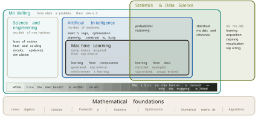
Before building one, it is worth being exact about what a model is for. Prediction is the use everyone names, and it is one of six. Figure 1.2 draws all six against a single time axis with the present marked on it, because the six differ mainly in where on that axis they point. To explain is to point backwards and give a mechanism for what already happened. To predict is to point forwards from now. To filter is to estimate the state of the system at the present moment from readings that are noisy, and to smooth is to re-estimate a past state in the light of everything recorded since. The two are one use, estimating a state, and the figure draws them on one row. To simulate is to ask what the same system would have done with one thing changed. To control is to choose an action now so that the system arrives later at a state we want. To diagnose is to compare a measurement against the model and read the difference. The last of the six is where this section ends up, and it is the one that repays the most attention.
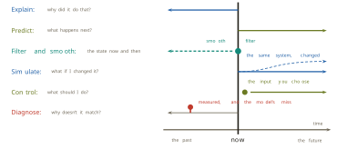
Filtering and smoothing are given their modern form by the recursive estimator that Rudolf Kalman published in 1960 in the Transactions of the American Society of Mechanical Engineers (Kalman 1960), on the assumptions that the dynamics are linear and the noise is Gaussian. The method flew on Apollo, and it runs in every Global Positioning System (GPS) receiver. Chapter 3 treats it properly. What matters here is the shape of the claim: one representation of a system, pointed at six different questions.
Building a white-box model
Take the least consequential of the four systems above, a cooling cup of coffee, and build a model of it completely. The worked series used throughout this section is a teaching example rather than a published dataset, generated so that its arithmetic is reproducible by hand; the two anchor readings quoted below are exact by construction. A thermometer sits in the mug and is read every two minutes for half an hour, giving sixteen readings. The first is 90 degrees Celsius. The room holds at 20 degrees. The readings fall quickly and then flatten. Table 1.1 lists them, to two decimal places so that every number computed from the log in this section can be recomputed from the table.
| minute | degrees | minute | degrees |
|---|---|---|---|
| 0 | 90.00 | 16 | 50.48 |
| 2 | 80.70 | 18 | 47.88 |
| 4 | 73.88 | 20 | 45.50 |
| 6 | 68.47 | 22 | 43.33 |
| 8 | 63.94 | 24 | 41.35 |
| 10 | 60.00 | 26 | 39.53 |
| 12 | 56.50 | 28 | 37.87 |
| 14 | 53.34 | 30 | 36.35 |
The first thing to extract from the log is not a number but a rate. Drawn at six minutes, the line that just touches the curve has a slope of about 2.5 degrees per minute. Drawn near the end of the log it is almost flat. The rate at which the temperature changes is itself changing, and it shrinks as the temperature approaches the room. That observation, made on the plotted readings before any symbol is written, is the mechanism in embryo.
Stated in words, the mechanism is this. Heat flows from hot to cold, and it flows faster when the gap is bigger. Written in symbols, with \(T(t)\) the temperature of the coffee at time \(t\) and \(T_{\mathrm{env}}\) the temperature of the room,
\[ \frac{dT}{dt} \;=\; -k\,(T - T_{\mathrm{env}}), \qquad k > 0, \tag{1.1}\]
where \(dT/dt\) is the rate of change that was drawn on the log, and \(T - T_{\mathrm{env}}\) is the gap. The minus sign states that the temperature falls while the gap is positive. Newton published this relation anonymously in 1701, in the Philosophical Transactions of the Royal Society (Newton 1701), assuming that the body has one uniform temperature, that the surroundings stay fixed, and that the loss is proportional to the gap. An equation that ties a quantity to its own rate of change is called an ordinary differential equation (ODE).
The constant \(k\) deserves a moment. Everything else in Equation 1.1 can be looked up or measured with a thermometer. The constant cannot. It depends on the mug, the lid, the surface area of the liquid and the movement of the air, and no theory in the equation supplies it. Where it comes from is the question the last part of this section answers, and it is the door through which data enters the argument.
Equation 1.1 is solved by the substitution \(u = T - T_{\mathrm{env}}\). Since the room is fixed, \(du/dt = dT/dt\), and the equation becomes \(du/dt = -ku\). The function whose derivative is a constant multiple of itself is the exponential, so \(u(t) = u(0)e^{-kt}\). Undoing the substitution, and writing \(T_0 = T(0)\) for the starting temperature,
\[ T(t) \;=\; T_{\mathrm{env}} + (T_0 - T_{\mathrm{env}})\,e^{-kt}. \tag{1.2}\]
A reader who prefers to check rather than derive can do so with no calculus beyond differentiating an exponential. Differentiating Equation 1.2 gives \(dT/dt = -k(T_0 - T_{\mathrm{env}})e^{-kt}\), and the bracket in Equation 1.1 evaluates to \(T - T_{\mathrm{env}} = (T_0 - T_{\mathrm{env}})e^{-kt}\), so the two sides agree for every \(t\). Setting \(t = 0\) returns \(T(0) = T_0\), so the starting condition holds as well. The shape can also be read off the log directly. At \(t = 0\) the exponential equals one and the temperature is the starting temperature. As \(t\) grows the exponential shrinks towards zero and the temperature settles onto the room. That is the shape the readings trace, and Equation 1.2 now says why.
With \(T_0 = 90\), \(T_{\mathrm{env}} = 20\) and the value of \(k\) derived below, Equation 1.2 returns 37.3 degrees at 25 minutes. Nobody measured at 25 minutes. The number is a prediction in the strict sense: a statement about an unobserved moment that somebody could go out and check, and that would be found wrong if the model were wrong. Figure 1.3 shows the solved curve laid over the readings, with that prediction marked.
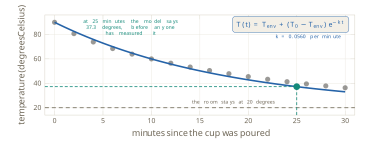
This model has a name for its position on the axis of Figure 1.1.
Definition 1.2 (White-box model) A white-box model is one whose mechanism is written down: its variables are real quantities with units, the relationships between them are explicit, its behaviour at unobserved points can be derived rather than guessed, and its assumptions can be stated in advance. A black-box model claims no mechanism, and fits only the mapping from input to output.
Four of the five properties in Definition 1.2 describe the reader rather than the coffee. The mechanism can be read, the relationship can be argued with, a value at an unmeasured minute can be derived, and the range over which the model should be believed can be written down before anybody disagrees about it. Figure 1.4 lists the five beside the model and draws the fifth onto it. The assumption that the room holds at 20 degrees is drawn on the line it concerns, and if a window opens, the exact line that stops being true can be named.
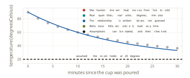
A worked case fixes the method, using the two anchor readings of Table 1.1. The room is at 20 degrees, the cup starts at 90, and after ten minutes the thermometer reads 60. When does the model say the coffee reaches 40, the temperature at which it is worth drinking? The question is answered in two steps, and the identity used in both is Equation 1.2.
First the constant. Substituting \(t = 10\), \(T = 60\), \(T_0 = 90\) and \(T_{\mathrm{env}} = 20\) gives \(60 = 20 + 70e^{-10k}\), so \(e^{-10k} = 4/7\). Taking logarithms of both sides, and flipping the fraction to clear the sign,
\[ k \;=\; \tfrac{1}{10}\ln\tfrac{7}{4} \;=\; 0.0560 \ \text{per minute}. \tag{1.3}\]
The logarithm is the only operation here that the mechanism did not already supply, and it is present for one reason: the unknown sits in an exponent, and the logarithm is what brings it down. Note what Equation 1.3 is and is not. The constant was not derived from theory. It was measured, indirectly, from two readings.
Second the answer. Setting \(T = 40\) in Equation 1.2 and solving for \(t\) instead of \(T\),
\[ 40 = 20 + 70e^{-kt} \quad\Longrightarrow\quad t \;=\; \frac{1}{k}\ln\frac{7}{2} \;=\; 22.4 \ \text{minutes}. \tag{1.4}\]
The same identity was used twice, once forwards to find a constant and once backwards to find a time. That pattern, one relation read in whichever direction the question demands, is most of what a white-box model is for.
The gap between the model and the measurement
A model earns its keep by leaving things out. The cooling model has no evaporation in it, no draught, no lid and no mug. That is not an oversight, and repairing it would not be an improvement. The question is only ever how much has been left out, and whether the remainder still answers the question asked of it.
The pendulum shows a simplification doing its work in public. The standard model of a pendulum states that the period does not depend on the amplitude at all, which is the flat line in Figure 1.5. It follows from replacing \(\sin\theta\) by \(\theta\) in the equation of motion, a substitution that is exact only in the limit of zero amplitude. The true period of a pendulum released from an amplitude \(\theta_0\) is
\[ T(\theta_0) \;=\; T_0 \cdot \frac{2}{\pi}\,K\!\left(\sin\frac{\theta_0}{2}\right), \tag{1.5}\]
where \(T_0 = 2\pi\sqrt{L/g}\) is the small-angle period and \(K\) is the complete elliptic integral of the first kind. Expanding Equation 1.5 for small \(\theta_0\) gives
\[ \frac{T(\theta_0)}{T_0} \;=\; 1 + \frac{\theta_0^{2}}{16} + O(\theta_0^{4}), \tag{1.6}\]
so the relative cost of the simplification grows as the square of the amplitude. Setting the correction \(\theta_0^2/16\) equal to one per cent gives about 23 degrees. The crossing marked in the figure is computed from Equation 1.5 itself, not from the series, and falls at 22.8 degrees. At 60 degrees the exact period is 7.3 per cent longer than the model says. The model is not wrong everywhere. It is wrong by an amount that depends on where it is used. Galileo recorded the near-constant swing around 1602 and published the argument in 1638 (Galilei 1638), and Huygens built the result into a working clock in 1673 (Huygens 1673). Both relied on the same simplification, and both were entitled to, because a clock pendulum swings through small angles. An assumption is best read as a stated range of validity rather than as a flaw.
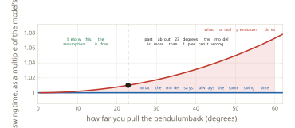
The same move, and the same kind of simplification, appears in fields that share no equipment. Kermack and McKendrick divided a population into the susceptible, the infected and the recovered, wrote the rates at which people move between the three compartments, and obtained the model now called SIR, published in 1927 in the Proceedings of the Royal Society A (Kermack and McKendrick 1927). It assumes that the population mixes homogeneously and that the rates stay constant. Its main parameter shaped public policy during the COVID-19 pandemic (Ferguson et al. 2020). Lotka in 1925 (Lotka 1925) and Volterra in 1926 (Volterra 1926) wrote two species and four rates, and obtained population cycles that neither author put in by hand, which is about the strongest evidence a model can offer. Lighthill and Whitham in 1955 (Lighthill and Whitham 1955) and Richards in 1956 (Richards 1956) treated cars as a compressible fluid and produced a traffic jam with no accident in it; ramp metering on motorways descends from that model. Black and Scholes in 1973 (Black and Scholes 1973), with Merton the same year (Merton 1973), priced an option without knowing the future price, on the assumption that volatility is constant, and the crash of 1987 is where the market stopped believing that assumption in public.
Underneath all of them is one move. Something is measured here, and something is claimed there. Sixteen readings from one mug on one afternoon are used to make a statement about another mug tomorrow, in a room nobody has visited. The step from the particular to the general is called induction, and Hume asked in 1748 what justifies it (Hume 1748). The honest answer is that the justification is hard, and this book does not have it yet. Chapter 2 pays part of the debt, at the point where generalisation is given a theory rather than an assurance. Everything built before then rests on a claim that has not been settled, and the right response is to say so each time rather than to hope the reader forgets.
Box stated the consequence in 1976 in the Journal of the American Statistical Association: all models are wrong, and the practical question is how wrong they have to be before they stop being useful (Box 1976). The seven words usually quoted, that all models are wrong but some are useful, are from Box and Draper’s book of 1987, on page 424 (Box and Draper 1987). The two sources state one idea, and the difference is worth keeping straight, because the 1976 version contains the instruction and the 1987 version only the slogan. The sharpest form of the point comes from outside statistics. Borges in 1946 described an empire whose map was drawn at the scale of the empire itself (Borges 1946), and Lewis Carroll had arrived there first, in 1893, in a novel called Sylvie and Bruno Concluded (Carroll 1893). Both maps were abandoned. A map that leaves nothing out is the territory again, and the territory was already available.
Reading the residual
If the model is wrong, the next question is how wrong, and the answer is not a single number.
Definition 1.3 (Residual) The residual at a measured point is the measurement minus the model’s value at that same point: \(r_i = T_i - T(t_i)\) for a reading \(T_i\) taken at time \(t_i\).
Under the ideal that beginners are taught first, the residuals would be a cloud of small values scattered about zero, with no pattern. Figure 1.6 shows what the cup actually gives. The residual is negative for the first ten minutes, reaching about \(-2.1\) degrees at four minutes, crosses zero, and is positive for the next twenty, growing to about \(+3.3\) degrees by the end. It does not scatter. It curves, it changes sign once, and it then stays on one side. Noise does not behave that way, because noise does not remember which side of the model it was on last time. The residual has structure, and structure is information about something the model does not contain.
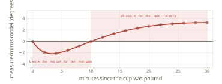
What to do with such a shape is settled by two episodes in the history of astronomy, which reach opposite conclusions from the same kind of evidence. Uranus was found in 1781, and from then on Newton’s laws predicted its position on any given night. It kept appearing somewhere else, and by the 1840s the discrepancy had grown to about two arcminutes. Two moves were available: declare the law wrong, or declare a term missing. Le Verrier in France and Adams in England both took the second. Le Verrier went further than asserting that a body existed. He computed where it would have to be, published the position on 31 August 1846 (Le Verrier 1846), and wrote to Berlin asking for a telescope to be pointed at that patch of sky. Galle and d’Arrest looked on 23 September 1846 and found Neptune within about one degree of the predicted place, on the first night of searching (Galle 1846). The residual was neither noise nor a broken law. It was a missing term, and the missing term was a planet.
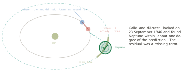
The sequel is why one episode is not enough. The orbit of Mercury turns slowly, and by the 1850s astronomers could account for nearly all of that turning. Nearly. A residue of 43 arcseconds per century remained, an arcsecond being one three thousand six hundredth of a degree, so that two centuries of measurement were needed to see the effect at all. Le Verrier, who had just found a planet this way, made the same first move in 1859 and proposed another planet closer to the Sun (Le Verrier 1859). It was named Vulcan and searched for over fifty years. There was no Vulcan. What was wrong was Newton’s law itself, and general relativity produced those 43 arcseconds per century in 1915 with no new body at all (Einstein 1915).
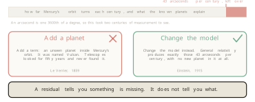
The rule that follows is the most useful sentence in this section. A residual says that something is missing. It does not say what. The same shape of evidence, handled by the same person with the same first move, yielded a new planet in one case and a new theory of gravity in the other. The consequence for practice is that a structured residual is a question, never a verdict, and the work of answering it is the work of the subject.
Where the constant comes from
One question has been deferred since Equation 1.1. The mechanism supplies the shape of the model, and it does not supply \(k\).
The value can be measured from two readings, as Equation 1.3 does, but a log of sixteen readings carries more information than two of them, and the two-point estimate ignores the rest. A better procedure scores a candidate value against the whole log. For a candidate \(k\), form the model’s value at each recorded minute, subtract it from the reading, square the difference, and add the squares:
\[ S(k) \;=\; \sum_{i=1}^{n}\bigl(T_i - T(t_i;k)\bigr)^{2}, \qquad \hat{k} \;=\; \arg\min_{k} S(k). \tag{1.7}\]
Squaring makes misses in either direction count, and makes a large miss count for more than several small ones. For the cup, \(S(0.04) = 530\), which is too shallow a curve, and \(S(0.07) = 660\), which dives too fast. The minimum lies between them, at \(\hat{k} = 0.0521\) per minute, where \(S = 42\). All three totals can be recomputed from Table 1.1. Figure 1.9 draws all three candidates through the log, each with its total. The method carries a name.
Definition 1.4 (Least squares) Least squares chooses the parameter value that minimises the sum of the squared differences between the recorded measurements and the model’s values at the same points, as in Equation 1.7.
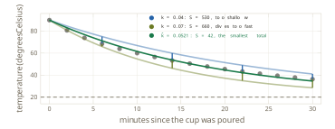
Searching a grid of candidate values is honest and, for one parameter, adequate. For this model the minimum can also be found without any search. Rearranging Equation 1.2 and taking logarithms turns the model into a straight line through the origin,
\[ \ln\frac{T(t) - T_{\mathrm{env}}}{T_0 - T_{\mathrm{env}}} \;=\; -kt, \tag{1.8}\]
so that fitting \(k\) becomes the problem of fitting the slope of a line, which has a closed-form solution. The two routes do not give exactly the same answer, because Equation 1.8 minimises squared error in the logarithm rather than in degrees, and that difference is the subject of Chapter 2. What matters here is that no machinery beyond arithmetic has been used.
Legendre published least squares in 1805, in a book on determining the orbits of comets (Legendre 1805). Gauss published in 1809 and claimed to have used the method since 1795 (Gauss 1809), which began a priority dispute that ran for decades. What settled the method’s reputation was Ceres. The asteroid was seen in January 1801 and then lost in the glare of the Sun. Gauss fitted an orbit from a handful of observations, said where to look, and it was recovered that December.
The combination just built has a name that is worth knowing, because practitioners use it daily and rarely name it. A model whose structure comes from theory and whose constants come from measurement is a data-driven white box, and something close to half of applied engineering lives there. The form of the drag force follows from the physics, and the drag coefficient in front of it comes off a wind tunnel. The equations of flow give the structure of pipe friction, and the friction factor is read off the Moody chart of 1944 (Moody 1944), itself a picture of fitted measurements built on Colebrook’s correlation of 1939 (Colebrook 1939). The physics fixes the form of a heat-transfer correlation, and its constants have been fitted to measured rigs since 1930 (Dittus and Boelter 1930). Each of these is the cup of coffee, scaled up and paid for.
It is tempting to conclude that fitting a parameter to data is machine learning, and the temptation should be resisted. The arithmetic is nearly the same. What differs is how much may be claimed afterwards. The structure of the cooling model came from theory, and the data was never asked what shape the answer should take. Its parameter has units, per minute, and a physical meaning, so the same mug measured tomorrow should give a similar number. There is one parameter, estimated from sixteen readings. The model extrapolates beyond the range of the log, and it is entitled to, because the law it rests on continues to hold there. In the chapters that follow, none of those four statements survives. Nobody can write the mechanism, so a family of candidate functions is chosen and searched. The parameters usually mean nothing on their own, and asking what one weight inside a network measures has no honest answer. There are thousands or billions of them rather than one. The fitted function interpolates, and pushing it outside the range of its training data returns a confident number that should not be believed. Breiman named the division in 2001 and argued that statistics had spent decades on the wrong side of it (Breiman 2001). Later chapters return to his argument once both sides of it have been built.
One limit of the model remains, and it is the limit that opens the next section rather than a defect to be repaired. Take the cup sixteen minutes in, at 50 degrees, and ask the model what happens next. Left alone, it cools towards the room and reaches about 28 degrees by minute forty. Given a minute in a microwave oven, back up to 85 degrees, and then left alone, it reaches about 38 degrees at the same moment. The model predicts both futures with the same accuracy and chooses neither, because nothing in Equation 1.2 expresses a set of available actions, a goal, or a way of ranking actions against that goal. Figure 1.10 draws the two futures and the question they raise.
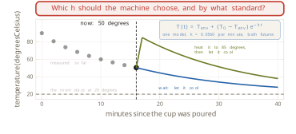
Five things have been established. A model is a simplified representation that answers questions without touching the system, and it is built for six kinds of question rather than one. A white-box model can be built end to end, from a sentence about a mechanism to an ordinary differential equation, its solution, and a check against measurements. The assumptions such a model makes can be stated, and the cost of each can be quantified before it is paid. A residual has a shape, and the shape is evidence that something is missing, though never evidence of what. The constants a theory cannot supply are measured from data by least squares, which is arithmetic and not learning.
What has not been established is how to choose. A model that has to decide between heating and waiting, between one route and another, is a model of a decision rather than of a mechanism, and that is the subject of Section 1.2.
Exercises
Using Equation 1.2 with \(T_0 = 90\), \(T_{\mathrm{env}} = 20\) and \(k = 0.0560\) per minute, compute the temperature at 5, 15 and 40 minutes. The log runs to 30 minutes at two-minute intervals. State which of the three values the model interpolates and which it extrapolates, and name the assumption the extrapolated value depends on.
Verify that Equation 1.2 satisfies Equation 1.1 and the condition \(T(0) = T_0\). Then show that it is the only such function, by setting \(u = T - T_{\mathrm{env}}\) and considering the derivative of \(u(t)e^{kt}\).
A second cup starts at 85 degrees in a room at 21 degrees and reads 55 degrees after 12 minutes. Find \(k\) to three significant figures, then find the time at which the model says the cup reaches 40 degrees. Give the answer to one decimal place.
Forensic estimation of a time of death applies Equation 1.2 to a body, with \(T_0\) taken as 37 degrees. A body is found in a room at 18 degrees and measured at 30 degrees, then again at 28 degrees one hour later. Estimate \(k\) from the two measurements, treating the first as the starting temperature of Equation 1.2, since the model can be started at any moment. Then run the model backwards from 37 degrees to estimate how long the body had been cooling when it was found. State two assumptions this use makes that the coffee cup did not have to make, and describe a realistic situation that breaks each one.
Differentiate Equation 1.2 with respect to \(k\) at fixed \(t > 0\) and show that the result is negative. Conclude that increasing \(k\) lowers the model everywhere after \(t = 0\), and hence that the residual of Definition 1.3 increases everywhere when \(k\) increases. Use this to argue that no value of \(k\) can remove a residual that is negative early and positive late, as in Figure 1.6.
Suppose the true temperature follows \(T(t) = T_{\mathrm{env}} + A_1 e^{-k_1 t} + A_2 e^{-k_2 t}\) with \(A_1, A_2 > 0\), \(A_1 + A_2 = T_0 - T_{\mathrm{env}}\) and \(k_2 > k_1\). Show that no single exponential of the form Equation 1.2 can equal it for all \(t\) unless \(A_2 = 0\). Show further that the residual against any single exponential fitted by Equation 1.7 must change sign at least once, and relate this to the evaporative term the worked example leaves out.
Starting from Equation 1.5 and the series \(K(m) = \frac{\pi}{2}\bigl(1 + \tfrac{1}{4}m^{2} + \tfrac{9}{64}m^{4} + \cdots\bigr)\), derive Equation 1.6. Find the amplitude at which the small-angle model first costs one per cent and compare it with the 22.8 degrees marked in Figure 1.5. Then state the amplitude at which the cost reaches five per cent, and say what this implies for the accuracy of a pendulum clock whose swing decays over the course of a day.
A colleague fits a model to data, obtains a residual that curves, and adds a new term to the model until the residual is flat. Using the Neptune and Vulcan episodes, and Box’s criterion, write a short argument for what else should be required before the new term is believed.
1.2 What Is Artificial Intelligence?
Section 1.1 ended on a model that could do everything asked of it except the one thing that mattered. The cooling law gave the cup’s temperature at any minute, measured or not, and it gave that temperature just as faithfully for a cup left alone as for a cup put back in the microwave for sixty seconds. What it could not do was say which of the two to do. Nothing in Equation 1.2 named a set of available actions, nothing in it stated a goal, and nothing in it ranked one action against another. A model of a mechanism answers the question of what will happen. A model of a decision has to answer a different question, which is what to do.
The machines that answer the second question are called artificial intelligence, and the phrase is used so loosely that on its own it carries almost no information. A route found for a phone this morning was found by searching a road network somebody wrote down, and nothing in that search learned anything. A university’s examination timetable, with hundreds of examinations and rooms and no two clashing, was produced by a constraint solver, and nothing in that solver learned anything either. In 1997 Deep Blue beat the reigning world chess champion, and its strength was search, on the order of a hundred million positions a second (Campbell et al. 2002). Meanwhile a newspaper reports that artificial intelligence has set an insurance premium, when the premium came from a pricing rule a person wrote by hand, and a product page claims to be powered by machine learning over a block of conditional statements.
Two of those four are serious pieces of engineering that learn nothing at all. Two are the word doing no work. The cost of the confusion is practical rather than philosophical. If one phrase covers a hand-written rule and the machine that beat Kasparov, then a claim about artificial intelligence promises nothing in particular, and anyone with a problem to solve cannot tell which part of the field to reach for. Three questions follow, and this section answers them in order. What is artificial intelligence? Where does it sit in relation to the modelling of Section 1.1? And how far can it go while a person still writes the whole model?
The answer to the second question comes first, because it frames the other two.
Definition 1.5 (Artificial intelligence) Artificial intelligence (AI) is the part of modelling whose models are of decisions: given what it knows, what should the machine do?
Figure 1.11 is the map of Section 1.1 with the region named in Definition 1.5 lit. Artificial intelligence lies inside modelling, alongside the sciences and engineering rather than opposite them, and machine learning (ML) lies wholly inside artificial intelligence. That containment is the claim this section has to earn, and the argument for it is given below at the point where a decision problem is first written down. The rest of the chapter works inside the lit region, and the whole of this section stays at the white end of the axis on the floor, where a person writes the model and a machine solves it.
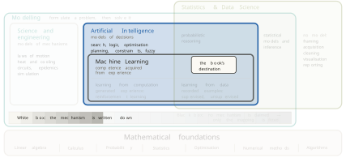
The four answers, and where learning sits in each
The field did not begin with Definition 1.5. It began with four competing definitions, and they are worth knowing because each is still visible in some corner of current practice. Two questions generate them. Should the machine think, or act? And should it do so like a person, or well?
Turing proposed the acting-humanly answer in 1950 in Mind (Turing 1950), and his move was to replace an unanswerable question with a testable one. Rather than defining thought, he asked whether an interrogator could tell a machine from a person by conversation alone. The assumption is that indistinguishable behaviour is sufficient evidence. The weakness of that assumption became public with ELIZA, a program of a few hundred lines that answered by reflecting a questioner’s own sentences back at them (Weizenbaum 1966). People confided in it as though it understood them. Passing is not the same as understanding.
The thinking-humanly answer came from Newell, Shaw and Simon, whose General Problem Solver (GPS) was reported at the International Conference on Information Processing in 1959 (Newell et al. 1959). The goal there is not a machine that performs well but a machine whose intermediate steps match the steps a person takes, collected by asking people to think aloud while solving puzzles. The assumption is that such a protocol reports the computation actually performed, and the tradition it founded is cognitive science rather than engineering.
The thinking-rationally answer is older than computing. Boole set out an algebra of propositions in 1854 (Boole 1854), Frege gave quantified logic its first modern notation in 1879 (Frege 1879), and McCarthy proposed in 1959 that a machine be given its knowledge as logical sentences and left to draw the consequences (McCarthy 1959). The assumption is that whatever matters can be written in logic. This is the quadrant that produced the expert systems, and, as the end of this section shows, their limit.
The acting-rationally answer is the one the field settled on, and it is the frame of Russell and Norvig’s textbook (Russell and Norvig 2020). Its standard of correctness is borrowed from decision theory: von Neumann and Morgenstern axiomatised preference in 1944 (Neumann and Morgenstern 1944) and Savage added subjective probability in 1954 (Savage 1954), so that doing well on average, given what is believed, became a quantity rather than a sentiment. Simon added the correction the engineering needs. Perfect rationality is not computable in any interesting setting, so real agents satisfice, settling for an action that is good enough under limits of time and information, an idea he called bounded rationality (Simon 1957).
Definition 1.6 (Rational agent) A rational agent takes in percepts and produces actions, and it acts so as to do as well as possible on average against a stated measure of performance, given what it knows.
The settlement is not a matter of taste. Acting rationally subsumes the other three, because a machine that acts well may reason, imitate or do neither, and the definition does not care. It also makes the standard measurable, which the other three do not. Figure 1.12 sets the four side by side and then asks one further question of each, which is where learning sits inside it.
Inside acting humanly, learning means learning from recorded human behaviour, which is imitation, and which lands in the recorded half of machine learning on the map. Inside thinking humanly, learning is a theory of how people learn, and the thing being fitted is the person rather than performance at the task. Inside thinking rationally there is almost no learning at all, since the knowledge arrives as axioms that somebody wrote. Inside acting rationally, learning is one means among several for obtaining good behaviour, and the others are search, planning and simply being told.
That last observation is the one worth carrying forward. All four answers are judged against the same standard, which is acting well given what is known, and that standard is what the word intelligence names here. It is a yardstick rather than a method. There are exactly two ways to meet it. A person can supply the competence, as rules, logic, constraints or an estimate, and the machine then searches or reasons its way to an action. Or the machine can acquire the competence from experience. The first route is the whole of this section. The second is machine learning, and it is the subject of Section 1.3. In none of the four answers is learning the definition of intelligence, and that is the reason machine learning is a part of artificial intelligence rather than another name for it.
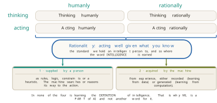
Writing a decision problem down
Every method in this section begins the same way, and the beginning is what puts the field inside modelling. Before any search runs or any rule fires, a person writes the problem down.
Take a delivery robot on a warehouse floor of eight by six cells, some of them occupied by shelving. It has to reach a pick point. The written model has five parts:
- the states: the 37 free cells, one for each place the robot can be;
- the actions: move up, down, left or right;
- the transitions: an action moves the robot one cell, and driving into shelving leaves it where it was;
- the goal test: whether the robot is standing on the pick point;
- the path cost: one per move, so that the cheapest route on this floor costs 10.
Definition 1.7 (Problem formulation) A problem formulation is a model of a decision consisting of a set of states, a set of actions, a transition rule saying what each action does, a goal test, and a cost.
Newell and Simon gave this structure its name, the problem space, in Human Problem Solving in 1972 (Newell and Simon 1972), assuming that a task can be cut into discrete states and discrete actions without losing what matters about it. The five-part form in Definition 1.7 is the standard presentation (Russell and Norvig 2020). Figure 1.13 shows the card filled in against the floor it describes, with the address of the whole object written underneath it.
Two things about that card decide the shape of this chapter. The first is that every one of its five slots was written by a person. The second is that the card is a model in exactly the sense of Definition 1.1: a simplified representation of a system, built to answer a question without touching the system. A transition rule saying that a move covers one cell is a claim about the warehouse that could be wrong, and it leaves out the wheel slip, the battery and the other robots on purpose. This is why artificial intelligence sits inside modelling. The methods differ from those of Section 1.1 in what is modelled, which is a decision rather than a mechanism, and not in whether anything is modelled at all.
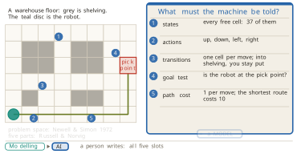
The same card can be written in richer ways, and each change of slot gives a different family of method. Replace the cost with a reward, of \(+10\) at the pick point and \(-1\) for every move, and add a discount \(\gamma\) between zero and one. The robot then acts to maximise the discounted total
\[ G \;=\; \sum_{t=0}^{\infty} \gamma^{t} r_{t}, \qquad 0 < \gamma < 1, \tag{1.9}\]
and with \(\gamma = 0.9\) a reward one step further away is worth nine tenths of a nearer one, which is what makes the robot prefer to finish sooner. Make the floor slippery, so that a move goes where it was meant eight times in ten and slides to each side one time in ten, and the transition slot stops being a rule and becomes a distribution,
\[ P(s' \mid s, a), \qquad P(s_{t+1} \mid s_{t}, a_{t}, s_{t-1}, a_{t-1}, \ldots) \;=\; P(s_{t+1} \mid s_{t}, a_{t}), \tag{1.10}\]
where the second equality is the assumption that gives the family its name. The next state depends on the present state and the action taken, and on nothing earlier.
Definition 1.8 (Markov decision process) A Markov decision process (MDP) is a problem formulation whose transitions are probabilities satisfying Equation 1.10, whose cost is replaced by a reward, and whose objective is the discounted total of Equation 1.9.
Bellman introduced this formulation in Dynamic Programming in 1957 (Bellman 1957), assuming the Markov property of Equation 1.10, which is what makes the problem tractable by working backwards from the goal. One feature of a reward deserves attention now, because Section 1.3 turns on it. A reward says what to achieve and never how to achieve it. Everything in this section is a way of supplying the how.
The claim that artificial intelligence is modelling can be made sharper, and the cup of Section 1.1 is the place to make it. Write a formulation for a heater under that cup. The states are the coffee’s temperature, starting at 90 degrees and falling. The actions are to heat or to wait. The transition slot needs a rule saying what waiting does to the temperature, and the rule that belongs there is Equation 1.2 with the constants of Section 1.1 already in it, which is \(T(t) = 20 + 70e^{-0.056t}\). The goal is a drinkable 40 degrees at the moment somebody sits down, and the cost is the energy used.
Not a symbol of the equation changed. What changed is the question asked of it. On the left of Figure 1.14 the law is solved forwards, returning the 22.4 minutes computed in Equation 1.4, and that is prediction, and the work belongs to science and engineering. On the right the same law occupies one slot of a decision model, and solving that model means choosing between heating and waiting against a stated goal, and the work belongs to artificial intelligence. The role decides the field, and the mathematics does not. This is also the answer to the question this section opened with, of whether to heat the cup or leave it.
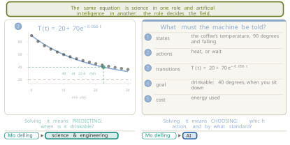
The edge of the field
Containment runs one way only. Artificial intelligence is modelling, and a great deal of modelling is not artificial intelligence. Drawing that edge is worth the trouble, because it is where the word is most often stretched.
The clear cases are the models of Section 1.1 and their relatives. The cooling law, the SIR model of an epidemic, a weather simulation, the stresses in a bridge, the Black and Scholes option price: every one is a model, and not one of them chooses anything. They predict, and a person acts on the prediction. A second group is less obvious. Fitting \(k\) to the cup’s log by least squares is modelling with data, and there is still no decision anywhere in it. It belongs where statistics and data science overlaps modelling, outside artificial intelligence.
A third group straddles the boundary, and honesty about it matters more than tidiness. Control engineering chooses actions continuously by feedback, and Wiener named the tradition in Cybernetics in 1948 (Wiener 1948), assuming that the system can be measured and acted on without interruption. Operations research chooses the best allocation of resources under constraints, and Dantzig devised the simplex method for the linear case in 1947, publishing it in 1951 (Dantzig 1951) on the assumption that objective and constraints are both linear. Both fields choose. Both are older than the vocabulary of this chapter, and their methods overlap those of artificial intelligence rather than sitting inside it. Dynamic programming and scheduling belong to both traditions at once.
Figure 1.15 places all of these on the map and states the rule that decides. A model belongs to artificial intelligence when it is used to choose, and when it chooses by searching, reasoning or learning. Prediction alone falls outside.
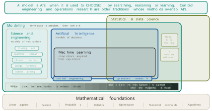
The smallest interesting test of that rule is a thermostat. McCarthy described one in 1979: it turns the heat on a degree below the setting, off a degree above, and leaves it alone in between (McCarthy 1979). Two tests apply, and they disagree, which is what makes the case instructive.
The first test asks whether the thing is an agent in the sense of Definition 1.6. A percept goes in, which is the room’s temperature. An action comes out, which is heat on or heat off. The action is taken towards a goal, which is the setting. Russell and Norvig call a machine that acts on the current percept alone, ignoring everything before it, a simple reflex agent (Russell and Norvig 2020). McCarthy went further and argued that a thermostat can be said to hold three beliefs, that the room is too cold, too hot, or acceptable (McCarthy 1979). By this test the thermostat passes.
The second test asks whether it searches, reasons or learns. It has one fixed rule and nothing to compare that rule against, so it weighs no alternatives at all. By this test it fails. Its home tradition is the one Wiener named, and on the map it joins the control engineering chip that straddles the edge. The honest answer is that the thermostat sits on the boundary, and the boundary is precisely where the two tests disagree.
Figure 1.16 closes the case with the change that settles it. Give the thermostat the cooling law of Section 1.1 and a timetable of when the room will be used, and let it compare candidate heating plans against both before acting. That is model predictive control. The machine now weighs alternatives, and it moves inside. The same hardware crossed the boundary because one more thing was written down.
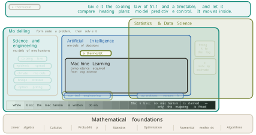
Five families, and the address of each
With the boundary drawn, the interior can be surveyed. Five families do most of the work, and each is given the same three-part address: what a person writes, where the intelligence comes from, and whether any part of the model can be learned. The addresses are what assemble into the map at the end of the section.
Search computes the answer directly. A maze of twelve by eight cells is the formulation of Definition 1.7 on a different floor, and the question is how much work finding the cheapest path costs. Dijkstra’s method of 1959 expands cells in order of the distance already travelled (Dijkstra 1959), and on this maze it examines 84 cells before it finds a path of cost 21. Now write one number on every cell: the number of moves that would remain if the walls were not there. Hart, Nilsson and Raphael showed in 1968 that ranking the frontier by the sum of the distance already walked and that estimate finds the same cheapest path (Hart et al. 1968). Writing \(g(n)\) for the cost of reaching a cell and \(h(n)\) for the estimate of what is left,
\[ f(n) \;=\; g(n) \,+\, h(n), \tag{1.11}\]
and the search always expands the cell of smallest \(f\). On the same maze it examines 36 cells and returns a path of the same cost 21. Same answer, less than half the price. The guarantee rests on one condition,
\[ h(n) \;\le\; h^{*}(n) \quad \text{for every } n, \tag{1.12}\]
where \(h^{*}(n)\) is the true remaining cost.
Definition 1.9 (Admissible heuristic) A heuristic \(h\) is admissible when it never overestimates the cost of reaching the goal, as in Equation 1.12. A search ranked by Equation 1.11 with an admissible \(h\) returns a cheapest path.
The condition is not decoration. An estimate that overestimates even on a few cells makes the search return routes that are not cheapest, which the second exercise below asks the reader to construct. The address of the family follows. A person writes the states, the moves, the goal test, the cost and the estimate \(h\); the intelligence comes from search; and exactly one slot can be learned, since \(h\) can be estimated from solved instances, at which point the method crosses into machine learning.
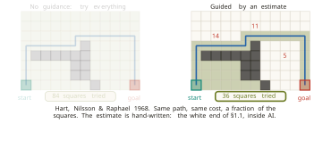
Optimisation applies when there is no goal test at all, only a score. The landscape of Figure 1.18 gives every candidate design a point, and the height of that point is how good the design is. Climbing to the best neighbour and stopping when none is better is the simplest possible rule, and it halts on the first peak it meets, which is rarely the highest. Kirkpatrick, Gelatt and Vecchi changed one line of that rule in Science in 1983 (Kirkpatrick et al. 1983). A worse move is accepted with probability
\[ P(\text{accept}) \;=\; \exp\!\left(-\frac{\Delta}{T}\right), \tag{1.13}\]
where \(\Delta\) is the drop in score and \(T\) a temperature that falls as the search proceeds. Early, when \(T\) is large, the search can climb out of a low peak. Late, when \(T\) is small, it settles. The analogy is with annealing metal, and the first application was placing circuits on chips.
A second idea keeps many candidates at once and applies three operations to the population: selection, which keeps the better members, crossover, which builds a new member from parts of two, and mutation, which perturbs a member at random. Holland published the genetic-algorithm form in 1975 (Holland 1975), Rechenberg the evolution-strategy form in 1973 (Rechenberg 1973) and Koza genetic programming in 1992 (Koza 1992), all on the assumption that selection plus variation finds good designs without any gradient. In the run behind Figure 1.18 the population’s mean score rises from 0.28 to 0.62 over five generations, and it gathers on the lower of the two peaks. A population raises the average and promises nothing about the best. The method is far from a toy: the antenna carried by the National Aeronautics and Space Administration’s Space Technology 5 (ST5) spacecraft, flown in 2006, was designed this way (Hornby et al. 2006). Swarm methods share the shape, with each candidate keeping its own momentum and being pulled towards the best point it has seen and the best the group has seen (Kennedy and Eberhart 1995; Dorigo 1992). In the same run the swarm gathers on the higher peak, where the population did not.
Under every name in this family sit two operations, which are to keep the good ones and to vary them. Nothing enters from data at any point, so the evolutionary vocabulary is a metaphor and not learning. A person writes the encoding and the score, computation improves the score, and the family cannot learn by itself, although it is often used to tune the settings of systems that do.
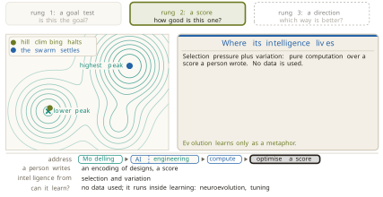
Constraints and logic are the family for problems that are reasoned about rather than walked through. A constraint satisfaction problem (CSP) states what must not happen: variables, the values each may take, and the combinations forbidden. Colouring a map so that no two touching regions share a colour is the textbook instance, and the same formulation schedules telescope observations, airline crews and examination timetables. Mackworth’s arc consistency of 1977 prunes values that cannot participate in any solution before search begins (Mackworth 1977), assuming that the constraints are known in advance and hard.
Logic states what is known rather than what is forbidden. From the rule that rain makes the ground wet, and the observation that it is raining, the wetness of the ground is derived rather than learned, by the inference step Robinson mechanised as resolution in 1965 (Robinson 1965). Asking the same machinery whether any assignment makes every statement true at once is Boolean satisfiability (SAT), and the procedure behind modern solvers descends from the method of Davis, Logemann and Loveland of 1962 (Davis et al. 1962). Those solvers now verify processor designs and communication protocols.
The address is the same shape as before. A person writes the variables, domains and constraints, or else the facts and rules; the intelligence comes from the solver’s inference, which propagates and deduces; and rules themselves can be learned from examples, which Muggleton named inductive logic programming in 1991 (Muggleton 1991). Hard constraints are rarely learned, since they usually come from a rule, a law or a physical limit rather than from examples.
This family also supplies the wall that the next section starts from. DENDRAL inferred molecular structures from mass spectra (Lindsay et al. 1980) and MYCIN diagnosed bacterial infections and recommended antibiotics (Buchanan and Shortliffe 1984), both by rules elicited from experts and written down by hand. Both worked. What defeated the approach was the elicitation itself, which is slow, expensive and hard to keep consistent as the rule base grows. The difficulty has a name, the knowledge-acquisition bottleneck, and it is a large part of why the field turned to learning.
Probability is the family for reasoning when what is true is not known. Its central computation can be met by counting before any formula appears. Consider a test that is 99 per cent accurate, for a disease carried by one person in a thousand, and ask how likely a person with a positive result is to be ill. Among 1000 people, one has the disease, and the test finds that person 99 times in 100. It also flags one healthy person in a hundred, which is 10 of the remaining 999. Anyone with a positive result is one of 11 people, and one of the 11 is ill. The answer is one in eleven, about 9 per cent, and the common guess is 99 per cent. Written as a rule,
\[ P(H \mid E) \;=\; \frac{P(E \mid H)\,P(H)}{P(E)}, \tag{1.14}\]
where \(H\) is the hypothesis of interest and \(E\) the evidence observed. Substituting the same four counts,
\[ P(\mathrm{sick} \mid +) \;=\; \frac{0.99 \times 0.001}{0.99 \times 0.001 + 0.01 \times 0.999} \;=\; 0.090, \tag{1.15}\]
which is the count again. Bayes stated the rule in a paper communicated by Price in 1763 (Bayes 1763) and Laplace gave it its general form in 1812 (Laplace 1812), on the assumption that a prior exists and can be stated. Figure 1.19 shows the grid and the rule side by side, so that every symbol in Equation 1.15 points at a quantity that was counted.
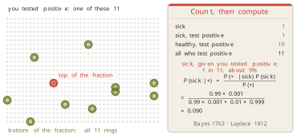
One test is arithmetic. A world in which many causes act at once needs structure. Pearl supplied it in 1988 by drawing the causes as a graph and attaching to each node a table of probabilities conditional on its parents (Pearl 1988). The assumption is that the conditional independences of the domain can be read off the graph. A network over smoking, influenza, bronchitis, coughing and fever, with a prior of 0.25 on smoking and 0.05 on influenza, answers a query about a patient who is coughing and feverish with 0.93 for influenza and 0.18 for bronchitis. The fever is what discriminates. Networks of this kind diagnosed disease in Pathfinder (Heckerman 1990) and now filter mail and locate faults.
Two further questions split the family. Markov gave the theory of processes whose next state depends only on the present one in 1906 (Markov 1906). When the state cannot be seen directly and only a consequence of it is observed, the model is a hidden Markov model (HMM), which Baum and Petrie analysed in 1966 (Baum and Petrie 1966) and which carried speech recognition for decades (Rabiner 1989). When an agent acts and the state is fully visible, the model is the Markov decision process of Definition 1.23. When an agent acts and the state is hidden, the model is a partially observable Markov decision process (POMDP), introduced by Åström in 1965 (Astrom 1965). Such an agent cannot condition on the state, so it conditions on a belief instead: one number for each state, saying how likely that state is now, with
\[ b(s) \;\ge\; 0 \quad \text{for every } s, \qquad \sum_{s} b(s) \;=\; 1, \tag{1.16}\]
so that a belief of \((0.1, 0.7, 0.2)\) over three states means the agent is fairly sure it occupies the middle one and acts accordingly.
Inference in these models means summing over possibilities, and the number of possibilities is often past counting. The response is to sample. Metropolis and Ulam named the approach in 1949 (Metropolis and Ulam 1949): throwing 100 uniform points into a square puts 0.750 of them inside the inscribed quarter circle, whose true area is \(\pi/4 = 0.785\), and 1000 points give 0.792. When points cannot be thrown evenly, a chain is walked whose visits have the required distribution, which is Markov chain Monte Carlo (MCMC), from Metropolis and co-authors in 1953 (Metropolis et al. 1953). The same device works on a game tree, where random play-outs from a position accumulate win counts that steer the next play-out, which is Monte Carlo tree search (MCTS) (Coulom 2006; Kocsis and Szepesvari 2006).
The family divides cleanly on one question, which is where the numbers come from. When the model and its numbers are given, the work is inference, and no learning takes place. When the numbers come from data, the work is learning. The numbers may be counted from records, or recovered where records are incomplete by the expectation-maximisation (EM) algorithm of Dempster, Laird and Rubin of 1977 (Dempster et al. 1977), or carried as a spread of plausible values that the data narrows. The models are identical in the two cases. Only the source of the numbers differs, and that is why statisticians and researchers in artificial intelligence both claim the family as theirs.
Fuzzy systems answer a question the previous family does not ask. Probability concerns whether a statement is true. Vagueness concerns how much a word applies. Asking whether 20 degrees is warm with ordinary sets forces a line to be drawn, so that 19.9 degrees is not warm and 20.0 degrees is, which is not how the word behaves.
Definition 1.10 (Fuzzy set) A fuzzy set over a domain assigns to each element a degree of membership between 0 and 1, rather than the 0 or 1 of an ordinary set.
Zadeh introduced this in Information and Control in 1965 (Zadeh 1965), assuming that membership can be graded meaningfully and consistently. With memberships for cold, warm and hot that overlap, 22 degrees is 0.6 warm and 0.3 hot and not cold at all. Figure 1.20 sets the two ideas beside each other, and the distinction is the point of the figure. A 70 per cent chance of warmth tomorrow is uncertainty, because tomorrow will be warm or it will not, and the number says which. A membership of 0.6 is vagueness, because nothing is unknown and the word simply has no sharp edge. The same contrast separates probably from fairly, which is why the two ideas have different addresses inside reasoning.
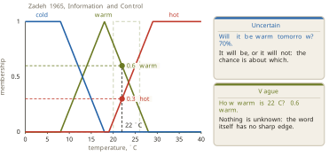
Rules written over fuzzy sets make a controller. Three rules, that a cold room takes a low fan speed, a warm room medium and a hot room high, are enough. The fan speeds are fuzzy sets too, over a scale of 0 to 100 per cent. Low falls from full membership at 0 to none at 40, medium rises from 20 to a peak at 50 and falls to none at 80, and high rises from none at 60 to full membership at 100. At 22 degrees the memberships above fire the three rules at 0, 0.6 and 0.3. Each fired rule cuts its fan-speed set off at that height, the cut shapes are combined by taking their upper envelope, and the shape is reduced to a single number by taking its centre of area,
\[ u^{*} \;=\; \frac{\int u\,\mu(u)\,du}{\int \mu(u)\,du} \;=\; 58\% . \tag{1.17}\]
Mamdani and Assilian ran a steam engine this way in 1975 (Mamdani and Assilian 1975), and controllers of this kind have driven the Sendai subway since 1987 as well as a generation of washing machines and camera autofocus systems. A person writes the memberships and the rules, which makes it a white-box model of expert knowledge in the sense of Definition 1.2, and the memberships can later be tuned from data by an adaptive-network-based fuzzy inference system (ANFIS) (Jang 1993).
One more name is worth placing exactly, because it is often mistaken for a sixth family. Zadeh grouped fuzzy, neural, evolutionary and probabilistic methods together in 1994 under the heading of soft computing, on the property that all of them tolerate imprecision (Zadeh 1994). The grouping crosses the columns of the map rather than occupying one of them, and it is a label for a shared attitude rather than a territory.
The map assembled
The five addresses assemble into one picture, and the picture is derived rather than asserted. Start from the agent of Definition 1.6, with percepts going in and an action coming out, and ask four questions about the world it acts in, together with one about the model it is given. Is the world fully observable? Is it deterministic? Is it static? Is it known? And if it is known, how is the model written?
Reading the answers downwards gives the columns of Figure 1.49. A world that is fully observable, deterministic, static and known, whose model is written as states and moves, admits a direct computation of the answer, and that column holds search, planning, local search and the evolutionary and swarm methods. A world that is known but whose model is written as facts and rules is reasoned about instead, and that column holds logic, constraints, probability and fuzzy logic. The first four properties do not separate these two columns at all, which is the detail most summaries of the field get wrong. A constraint problem is fully observable, deterministic and static, and it is still reasoned about rather than searched. What separates the two columns is how the known model is written.
The third column is defined by a single answer. The world is not known, so the model has open slots, and the slots have to be filled from experience. That column is machine learning, and Figure 1.49 draws it with its contents held back, since Section 1.3 is where they are earned. Its two halves can be named now. Experience that already exists is a dataset, which is learning from data, and experience the machine generates for itself is learning from computation.
Three boundaries can then be drawn around these columns, and each is a claim the section has argued. Machine learning encloses the third column and nothing else. Artificial intelligence encloses all three columns and the agent, so that the first two columns are artificial intelligence with no learning anywhere in them. Modelling encloses all of that and more, since the models of Section 1.1 sit inside modelling and outside artificial intelligence entirely. Along the floor runs the axis of Section 1.1, and the columns take their places on it: computing and reasoning near the white end, where a person wrote the mechanism, and learning towards the black end, where the mapping is fitted.
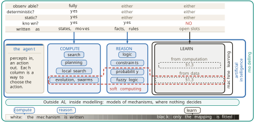
The map earns its keep by placing problems that were never mentioned while it was built. Take a warehouse robot that must pick items it has never seen, from bins whose contents change every hour. Observable? Not fully, since it cannot see inside a bin until it looks, which closes the computing column. Known? No, since the items are unfamiliar and the contents change, which closes the reasoning column. The robot belongs in the learning column, and the property that put it there is the answer to the fourth question. Change that one property, by fixing the bin contents and telling the robot what they are, and the robot moves to the reasoning column rather than the computing one, because it still cannot see everything at once. The trap worth naming is that known is a statement about what the system has been told, and not about whether anybody in the world knows.
Figure 1.22 gathers the families into one table and lights the column that this section has been about. Every row names what a person writes, what computation does with it, what part of it could be learned, and where the row sits on the axis. The learning row is present by name and otherwise left in outline, because what a person writes there is the business of Section 1.3. Cover the column headed a person writes, and no row above has a method left. That is the argument for Definition 1.5 in one gesture. A decision model is still a model, and the field that builds decision models is therefore a part of modelling.
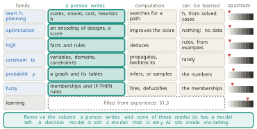
The rule nobody can write
Every method in this section shares one assumption, and it has been in plain sight since Definition 1.7. A person can write the model down. The states and moves for search, the score for optimisation, the facts and rules for logic, the graph and its tables for probability, the memberships for a fuzzy controller: in every case a person supplied the thing the machine then operates on. The expert systems met the limit of that assumption first, in the shape of the knowledge-acquisition bottleneck, and the limit is general rather than particular to them.
Figure 1.23 makes it concrete with the smallest example available. A grid of pixel values is printed, which is 108 numbers and nothing else. A reader recognises the digit seven in about a tenth of a second and cannot say how. The mapping from those numbers to that answer plainly exists, because the reader just ran it. There is no mechanism to derive it from, no law to solve, and no expert who can dictate the rule, since the people who perform the task best are exactly the people least able to describe how they do it. The address of the problem can be written, and its last slot cannot be filled.
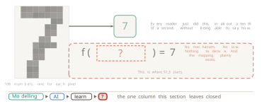
Four things have been established. Artificial intelligence is the modelling of decisions, and the field settled on the rational agent of Definition 1.6 after trying three other definitions, with learning appearing in all four as a route to good behaviour rather than as the definition of it. A decision problem is written down before any method runs, in the five-part form of Definition 1.7 or one of its richer relatives, and that formulation is what places the field inside modelling. Not all modelling is artificial intelligence, and two older traditions, control engineering and operations research, straddle its edge. Five families divide the interior, and each one is fixed by what a person writes, where its intelligence comes from, and which of its slots could be filled from data.
What has not been established is what to do when no person can write the model. When the mapping cannot be derived and cannot be dictated, it has to be induced from examples of the mapping at work, and that is the subject of Section 1.3.
Exercises
A hospital schedules operating theatres for a week, given surgeons, rooms, expected durations and a list of rules that must not be violated. Write the problem as the five slots of Definition 1.7. Then say which column of Figure 1.49 it belongs to, name the property that puts it there, and name a single change to the problem that would move it to a different column.
On the maze of Figure 1.17 the unguided search examines 84 cells and the guided search examines 36, and both return a path of cost 21. Explain why the two costs must agree given Equation 1.12, and construct a small maze and a heuristic \(h\) that violates Equation 1.12 on one cell, such that the search ranked by Equation 1.11 returns a path that is not cheapest. State the cost of the path it returns and the cost of the true cheapest path.
Using Equation 1.9 with \(\gamma = 0.9\), a reward of \(-1\) for every move, including the last, and \(+10\) on arrival at the pick point, so that a route of \(n\) moves earns \(r_0\) to \(r_{n-1}\) equal to \(-1\) and \(r_n = +10\), compute the discounted total for a route of 10 moves and for a route of 14 moves on the floor of Figure 1.13. Then decide whether any \(\gamma\) strictly between 0 and 1 makes the two routes worth the same, and say in one sentence what a discount of 1 would mean for the robot’s preferences.
Repeat the calculation of Equation 1.15 for a disease carried by one person in 100 rather than one in 1000, keeping the test at 99 per cent accurate in both directions. Then find the prevalence at which a positive result makes illness more likely than not. Explain why the answer depends on the prevalence at all, referring to the counts in Figure 1.19 rather than to the formula.
A weather forecast says there is a 30 per cent chance of frost tonight. A cook says the soup is fairly hot. A doctor says that, given a positive test, the patient is probably ill. Classify each as uncertainty or as vagueness, using Definition 1.10 and the distinction drawn in Figure 1.20, and justify each classification by naming what would settle the question. Then explain why probably and fairly cannot be represented by the same number.
Figure 1.15 places control engineering as straddling the boundary of artificial intelligence. Using the two tests applied to the thermostat, argue the case for placing a proportional controller for an aircraft’s altitude wholly outside the field, and then argue the case for placing a model predictive controller for the same aircraft wholly inside it. Say what the disagreement between the two arguments reveals about the boundary.
Equation 1.10 states that the next state depends only on the present state and action. Give a warehouse detail that breaks this assumption, and show how the formulation can be repaired by enlarging the state rather than by abandoning Definition 1.23. Then say what that repair costs, in terms of the number of states, and relate the cost to the assumption Newell and Simon made in
Simulated annealing accepts a worse move with the probability of Equation 1.13. Compute that probability for \(\Delta = 0.1\) at \(T = 1\) and at \(T = 0.01\). Using those two numbers, explain why the temperature is lowered during the search rather than held fixed, and explain why a search that never accepts a worse move halts where Figure 1.18 shows hill climbing halting.
Cover the column headed a person writes in Figure 1.22 and confirm that no row retains a method. Then write the row that Section 1.3 will fill, proposing an entry for each of its four cells, and state which of the four is hardest to propose and why. Keep the answer for comparison after reading Section 1.3.
1.3 What Is Learning?
Section 1.2 ended at a wall. Every family it surveyed works because a person wrote the model down first: the states and moves for search, the encoding and the score for optimisation, the facts and rules for logic, the graph and its tables for probability, the memberships for a fuzzy controller. The expert systems met the limit of that assumption first and gave it a name, the knowledge-acquisition bottleneck, and Figure 1.23 showed that the limit is general. A reader recognises a handwritten seven in about a tenth of a second and cannot say how.
Four problems make the wall absolute, and they are worth stating together because what they share is the point. The value of a position in the game of Go: a strong player looks and knows, is usually right, and calls it judgement. The grip a warehouse robot needs for an item it has never held: a person performs it without thinking. The digit in a handwritten seven: postal sorting machines read millions a day. The tumour in a scan: a radiologist finds it in seconds, and asking for the rule produces more scans rather than a rule. In each case the relationship is real, and something performs it reliably, and no person can state it. The slot of the model that matters is exactly the one nobody can fill.
One conclusion must not be drawn from those four, and drawing it is the most common error in the subject. When the mechanism can be written, as it was for the cup of Section 1.1, or when the decision can be written, as it was for the warehouse floor of Figure 1.13, writing it is the better choice. A written model has parameters that mean something, it can be checked against theory, and it extrapolates on grounds that can be examined. The four problems above do not show that the written model was wrong. They show that for these problems the written option is closed. Closed is not the same as rejected, and the distinction survives to the end of this book.
The question that remains is the subject of this section. Where does a model come from when nobody can write it?
Experience fills an open slot
The answer is that the model comes from experience, and the form of the answer matters more than the word. Nothing about the formulation of Definition 1.7 is thrown away. One or more of its slots is left empty, and experience supplies what belongs there. The slots are the parts that definition lists: the states, the actions, the transition rule saying what each action does, the goal test, and the cost.
Definition 1.11 (Learning) Learning is what happens when part of a model is left open and experience fills it. The experience is either generated by the machine’s own actions or recorded by someone else.
Definition 1.11 is deliberately narrow, and its narrowness is what makes it useful. It says nothing about brains, nothing about understanding, and nothing about the size of the model. It names an operation on a formulation: a slot is opened, and something other than a person closes it. Machine learning (ML) is the region of artificial intelligence (AI) whose models are built this way, which is the third column Figure 1.49 named and left closed. Figure 1.24 opens it.
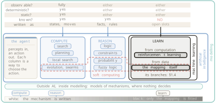
Two words on that figure are new, and each names something Section 1.2 already used without naming.
Definition 1.12 (Value) The value of a state is how good it is to occupy that state: the cost still to go, or the reward still to come. The heuristic \(h\) of Equation 1.11 is a value that a person wrote.
Definition 1.13 (Policy) A policy is a rule from what the machine senses to what it does. The thermostat of Section 1.2 has a policy, and a person wrote it.
With those two words available, the question of which slots can be opened can be asked precisely, and the answer is a table rather than a sentence. Figure 1.25 asks it of the card of Definition 1.7, one column per answer.
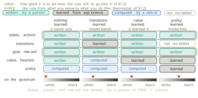
In the first column nothing is learned. A person writes the states, the actions, the transitions, the goal and the heuristic, and a solver computes the route. This is the warehouse floor of Section 1.2 exactly as it stood. In the second column the transitions are left open, and the robot learns what its moves actually do, which is called model-based reinforcement learning. In the third the value is left open, and experience supplies the estimate that a person supplied as \(h\). In the fourth the policy is left open and the transitions are not modelled at all, which is called model-free reinforcement learning.
Read the ringed rows before reading anything else. The states, the actions, and the goal or reward are written by a person in all four columns. The name model-free is often taken to mean that no model is present, and that reading is wrong in a way that matters. A model-free method has no model of the transitions. The formulation is still there, somebody still wrote it, and it is still a model in the sense of Definition 1.1: a simplified representation of a system that answers questions about it without touching it. The axis of Definition 1.2 runs from a model whose mechanism is written down to one that fits only the mapping from input to output. Learning moves a system along that axis towards the black end, because more of the model’s content comes from measurement and less from what was known in advance. It never moves the system off the axis altogether.
Experience has to come from somewhere. To act well, a machine needs information about which actions are good, and there are exactly two places that information can come from. It can already exist, recorded by somebody else, which is a dataset. Or the machine can generate it by acting, by searching, by simulating, and by observing what happens, which costs computation. Figure 1.26 draws both, together with the inlet a third source would need, drawn empty because there is no third.
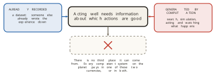
Every competent system pays in one of these two currencies or in both, and the division is the spine of the rest of this section. Recorded experience gives learning from data, which is where most of this book lives. Generated experience gives learning from computation, and it is learning in the full sense of Definition 1.11, paid for in processor time rather than in labels.
Learning from computation
The claim that trials can fill a slot is worth watching happen on a problem already understood, so that nothing about the problem is new when the filling starts. Take the warehouse floor of Figure 1.13, with its 37 free cells and its cheapest route of 10 moves, and open one slot. The states are written, the actions are written, and the reward is written: reach the shelf, and lose one point for every move. The value of each cell, meaning the number of moves still to go, is left empty. In Section 1.2 a person wrote that slot as the heuristic \(h\). Here nobody does.
The robot is allowed to act. It starts at its corner, moves, and each time it reaches the shelf it records how many moves each visited cell took. A trial is cut off after 26 moves, so that a single wandering episode cannot cover the whole floor by accident. The estimates were read off after 10, 100 and 1000 trials, and Figure 1.27 shows all three.
The shelf’s own cell needs no estimate, since its value is zero by definition, which leaves 36 cells to fill. After 10 trials, 13 of the 36 carry an estimate at all, and those estimates are poor: 16.1 and 15.4 and 14.9 where the true costs are smaller integers. The other cells are grey, because the robot has not been there, and drawing them grey rather than guessing is the honest choice. After 100 trials, 33 cells carry an estimate and the cells near the shelf have settled on the right numbers first, because a short walk is sampled more often than a long one. After 1000 trials every one of the 36 cells carries a value, and each is the true number of moves to the shelf to within a few hundredths.
Nobody wrote any of those numbers. The check that they are worth anything is to use them. From any cell, step to the neighbour holding the smallest number, and repeat. That rule performs no search at all, and from the robot’s corner it produces a route of 10 moves, which is the cheapest route on this floor. The slot a person filled in Section 1.2 has been filled by the machine’s own trials, and the route is as good.
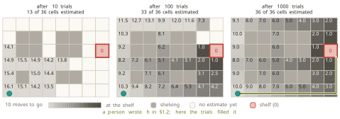
No update rule appears in Figure 1.27, and its absence is deliberate. This section places the idea and shows what it does. The rule that turns one trial into a revised estimate is the business of Chapter 16. What can be said now is the shape of the computation: act, count what the action cost, and let the counts settle.
The idea is old. Samuel programmed a checkers player at International Business Machines in the 1950s that improved its own evaluation function by playing against copies of itself. He reported it in the IBM Journal of Research and Development in 1959 (Samuel 1959), assuming that a game against oneself generates positions worth learning from. That paper is where the term machine learning enters the literature. The line most often quoted from it, that machine learning gives computers the ability to learn without being explicitly programmed, does not appear in the paper. It is a later paraphrase, and this book says so rather than repeating it.
Sutton gave the method its modern form in 1988 in Machine Learning (Sutton 1988). The move was to learn by comparing each estimate with the next one, rather than waiting for the final outcome, on the assumption that the states visited are revisited often enough for the comparison to mean something. Watkins and Dayan proved convergence for the control case in 1992 (Watkins and Dayan 1992). Tesauro put the method to work in TD-Gammon, a backgammon program that reached expert play by self-play and reported it in Communications of the ACM in 1995 (Tesauro 1995). The standard modern treatment is Sutton and Barto’s textbook (Sutton and Barto 2018).
Something stronger than slot-filling happens when the trials are recorded. Figure 1.28 shows the loop. A policy plays the game badly. It plays against itself, thousands of times, with no person involved, and every position is stored together with who eventually won. That store is a dataset, and nobody collected it. Training on it gives a better policy, which plays again and writes a better dataset, and the loop turns.
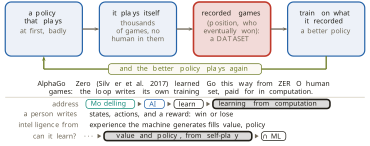
Silver and colleagues used recorded human games to start AlphaGo, reported in Nature in 2016 (Silver et al. 2016). The successor, AlphaGo Zero, reported in Nature in 2017, used none (Silver et al. 2017). Its assumption is the one to carry forward: a perfect simulator of the task exists, so that a position can be played out and scored without touching the world. Go supplies one, and a warehouse does not.
The traffic between the two sources runs in both directions. Computation can write down data, as above. Data can also stand in for computation, when a learned estimate replaces a search that would otherwise have to be run: a value learned from recorded games can score a position directly, where otherwise the game would have to be played out from it.
Sutton argued in 2019, in a blog essay called The Bitter Lesson, that over the long run methods that scale with computation, meaning search and learning, beat methods built from human knowledge (Sutton 2019). The essay is an argument rather than a measured result, and it is read here as one. The measured neighbour of the claim is the scaling work: performance improves predictably as parameters, data and compute grow together, from Kaplan and colleagues in 2020 (Kaplan et al. 2020) and Hoffmann and colleagues in 2022 (Hoffmann et al. 2022), both assuming that the three resources are scaled in step. The counter-position comes later in this section, from a theorem rather than from taste, and it is that a known mechanism is the strongest assumption available.
Learning from data
Everything above needed something to act on. AlphaGo Zero needed a simulator of Go. The warehouse robot needed a floor it could drive over, if only in simulation. A scan cannot be asked to try again, and a handwritten digit cannot be played out to a win. Take the simulator away, and all that is left is what somebody recorded. That is the other half of Figure 1.24, and the rest of this section works inside it.
The half is old enough that four communities arrived at it separately and gave it four names. Control engineers call it system identification: drive a plant, record what it does, and fit a model. No one can derive the model of a real distillation column from first principles. Åström and Eykhoff surveyed the field in Automatica in 1971 (Åström and Eykhoff 1971) and Ljung wrote its standard text (Ljung 1987). The classical assumptions are that the plant is close to linear, that it does not change while it is being measured, and that the input excites it enough to reveal its behaviour. Approximation theory calls it function approximation: given sample points of an unknown function, find a simpler function close to it, a formulation that mentions data not at all. Statistics calls it regression, after Galton’s 1886 study of the heights of parents and children in the Journal of the Anthropological Institute (Galton 1886). Machine learning calls it supervised learning, and Vapnik and Chervonenkis gave that version its theory in 1971 (Vapnik and Chervonenkis 1971).
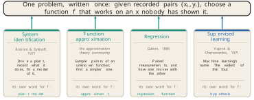
None of the four borrowed the problem from another, which is why the names never merged and why reading across fields is confusing. One caution belongs with the list. The three older names all name this problem. Supervised learning names a family that this problem sits inside, and it is the widest of the four, which Section 1.4 makes precise.
The problem can be stated in one line, and the line is worth taking apart object by object, because every object in it is something Section 1.1 already supplied under a different name.
The data is a set of recorded pairs,
\[ \mathcal{D} \;=\; \{(x_1, y_1), \ldots, (x_n, y_n)\}, \tag{1.18}\]
which for the cup of Section 1.1 was a thermometer log of 16 readings, a minute and a temperature in each. The hypothesis space \(\mathcal{H}\) is the set of candidate functions worth considering, and for the cup it was the family of cooling curves, one for each value of \(k\). That space was chosen before a single reading was taken, and it excluded straight lines and sine waves without any argument about the data. The loss \(L(\hat y, y)\) says how badly one candidate misses one recorded pair, and for the cup it was the squared miss of Equation 1.7. The score on the whole sample is the average of the loss over the recorded pairs,
\[ \hat R(f) \;=\; \frac{1}{n}\sum_{i=1}^{n} L\bigl(f(x_i),\, y_i\bigr), \tag{1.19}\]
and the procedure is to return the candidate that makes it smallest,
\[ \hat f \;=\; \arg\min_{f \in \mathcal{H}} \; \hat R(f). \tag{1.20}\]
Equation 1.20 is the whole of learning from data, and everything later in this book is a detail inside it. The instruction \(\arg\min\) says: of everything on the shelf, return the one whose score is smallest. In Section 1.2 the open slot was a value, which is one number per state. Here the open slot is the whole mapping from input to output.
One more quantity has to be named, and it is the quantity the rest of the book is about. Write \(R(f)\) for the same average taken over pairs that were not recorded, meaning the score the candidate would earn on the cases it will actually meet. Equation 1.19 can be computed. \(R(f)\) cannot, and not because the computation is hard. The pairs are not available.
The gap between \(\hat R(f)\) and \(R(f)\) is not a technicality, and the cheapest way to see it is to build a candidate that closes one and destroys the other.
Take 12 recorded pairs, generated from a straight relationship with noise added. Fit a straight line to them by least squares, as Definition 1.4 prescribes, which gives \(f(x) = 9.02 + 4.01x\). Its misses are visible, and its score by Equation 1.19 is \(\hat R = 11.13\).
Now take a second candidate seriously. For a new \(x\), find the recorded \(x\) closest to it and return the \(y\) that was recorded there. This lookup table is a legitimate function, it needs no arithmetic beyond a comparison, and it lies in a hypothesis space of its own. Its score on the recorded pairs is exactly \(\hat R = 0\), because it passes through every point it was given.
By the criterion of Equation 1.20 the lookup table wins outright, and it wins by the largest margin available. So record 8 further pairs from the same source, which neither candidate has seen. On those the straight line scores 13.35 and the lookup table scores 23.94. The candidate that was perfect is nearly twice as bad as the candidate that was not. Figure 1.30 shows both models and both columns of scores.
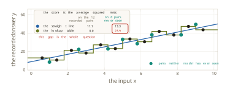
The procedure of Equation 1.20 has a name.
Definition 1.14 (Empirical risk minimisation) Empirical risk minimisation (ERM) is the rule that chooses the candidate minimising the score on the recorded sample, as in Equation 1.20.
Vapnik and Chervonenkis established the conditions under which empirical risk minimisation is sound, in Theory of Probability and its Applications in 1971 (Vapnik and Chervonenkis 1971), and Vapnik gave the book-length treatment in 1995 (Vapnik 1995). The assumption those conditions rest on is that the recorded pairs and the future pairs come from the same source. Nothing built so far makes that true, and this book does not pay the debt until Chapter 2, where generalisation is given a theory. Naming the debt here, rather than letting it pass, is the honest position, and it is the one place a reader should keep a standing suspicion of everything in this section.
Searching the hypothesis space
Set the scoring problem aside and ask a more basic question about Equation 1.20. The line says choose a function from a space of candidates. How is the choosing done?
Mitchell put the definition of learning on an operational footing in Machine Learning in 1997 (Mitchell 1997): a program learns from experience with respect to a task and a performance measure if its performance at the task improves with the experience. That definition says nothing at all about how, which is its virtue as a definition and its limit as a method. The second chapter of the same book supplies the how, and it is the move worth keeping. Learning is search. The hypothesis space is what is searched, a candidate is a point in it, and the loss ranks the points. The assumption is that the space can be fixed in advance, before any data is seen.
Search invites the obvious method, which is to try everything, and the obvious method fails at a speed worth quantifying. One parameter allowed 10 values gives 10 candidates, which can be checked by hand. Two parameters give not 20 but 100, because every combination has to be tried. A hundred parameters, which is a small model by any modern standard, give \(10^{100}\) candidates. The observable universe contains about \(10^{80}\) atoms, so the space is twenty orders of magnitude larger than the universe is granular. A machine checking a billion candidates a second since the Big Bang would have checked a vanishing fraction of it.
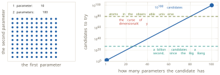
Bellman named this behaviour in Dynamic Programming in 1957 (Bellman 1957), where the same book supplied Definition 1.23. The curse of dimensionality is the reason every method after the opening sections of this book is iterative. Enumeration is not slow. It is impossible.
Section 1.2 climbed a ladder for exactly this situation and stopped one rung short. The first rung is a goal test, which answers whether a candidate is the answer, and it is what A* searches with. Direction there had to be bought from a person, in the form of the heuristic \(h\) of Definition 1.9. The second rung is a score, which answers how good a candidate is, and it is what hill climbing and annealing work with. The third rung answers a different question: which way is better?
The third rung needs something the first two do not. Figure 1.32 sets a listable space of candidates beside a continuum. On the left the candidates can be enumerated and neighbouring candidates score 7.4 and 1.2, which is to say that nothing whatever connects a candidate’s score to its neighbour’s, because the neighbour relation was defined by hand. On the right the parameter runs continuously, there is no next candidate at all, and two values a hair apart score 3.54 and 3.11. That is what a continuum with a smooth objective gives for nothing: a local reading that says which way is better without any neighbour being scored.
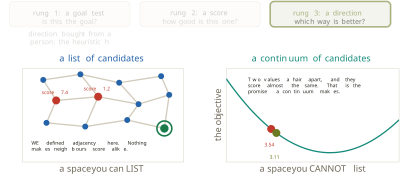
The slope can be built out of numbers already in hand, which makes it worth building rather than asserting. Return to the cup of Section 1.1, its log of 16 readings and its model \(T(t) = 20 + 70e^{-kt}\). For a candidate value of \(k\), Equation 1.7 gives one number, the total squared miss over the whole log. Compute that number for one candidate, then for a second, then for several more, and plot each total against the \(k\) that produced it. The totals trace a bowl. Its lowest point is at \(\hat k = 0.0521\) per minute with a total of 42, which is the value least squares returned in Section 1.1 and nothing else. No new quantity has been introduced. Numbers already computed have been plotted against the parameter that produced them, and the plotting is what makes the slope visible.
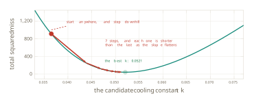
Two ingredients separate the rungs, and naming them separates two families of method. A score on every candidate turns search into optimisation, so that any two candidates can be compared and a step to a better neighbour is possible. Discrete spaces reach this rung and stop there, which is where hill climbing, simulated annealing and beam search live. A continuum carrying a differentiable objective adds the second ingredient, and the slope then names the better direction without any neighbour being scored.
The rule that walks down the slope is one line. Stand somewhere, read the slope, and step against it.
\[ \theta \;\leftarrow\; \theta \,-\, \eta \, \nabla J(\theta), \tag{1.21}\]
Here \(\theta\) is whatever parameter is being chosen, which for the cup is \(k\), and \(J\) is the objective, which for the cup is Equation 1.7. The term \(\nabla J(\theta)\) is a name for the slope already drawn on Figure 1.33, and \(\eta\) is how far to step.
Definition 1.15 (Gradient descent) Gradient descent chooses a parameter by repeated application of Equation 1.21, moving against the slope of the objective at the point currently occupied.
Cauchy published the method in the Comptes Rendus of the French Academy of Sciences in 1847 (Cauchy 1847), assuming a usable slope at every point the walk reaches. It is older than every other method in this book by more than a century, and it trains almost every model in current use. Robbins and Monro made the step survive a slope that can only be estimated from a handful of pairs at a time, in the Annals of Mathematical Statistics in 1951 (Robbins and Monro 1951), on the assumption that the step sizes shrink neither too quickly nor too slowly. That variant is stochastic gradient descent (SGD), and it is how large models are actually trained.
The walk on Figure 1.33 starts well to the left of the answer and arrives at the bottom in seven steps. The step lengths shrink as it goes, and nothing in Equation 1.21 instructs them to. The slope flattens near the minimum, so the same \(\eta\) buys a shorter step.
A small example makes the arithmetic explicit. Take \(J(\theta) = (\theta - 3)^2\), whose slope is \(\nabla J(\theta) = 2(\theta - 3)\), start at \(\theta_0 = 0\), and use \(\eta = 0.1\). The first step reads the slope at 0, which is \(-6\), multiplies by \(\eta\) to get \(-0.6\), and subtracts it, so that
\[ \theta_1 \;=\; 0 - 0.1 \times (-6) \;=\; 0.6 . \tag{1.22}\]
The second step reads the slope at 0.6, which is \(-4.8\), and gives
\[ \theta_2 \;=\; 0.6 - 0.1 \times (-4.8) \;=\; 1.08 . \tag{1.23}\]
The first step covers 0.6 and the second covers 0.48. Subtracting a negative slope moves the parameter to the right, towards the minimum at 3, and the steps shorten on their own as the slope flattens. That is the behaviour of Figure 1.33 in two lines of arithmetic.
The pieces can now be sorted by who owns them, and the sorting answers a question that is easy to get wrong. The loss is ours, chosen before any pair arrived. The optimiser is ours. The hypothesis space is ours, and it was fixed before the log was opened. The recorded pairs are the data’s, and so is everything that follows from them: the score attached to each candidate, the slope at the point currently occupied, and therefore every step the walk takes and the point it stops at.
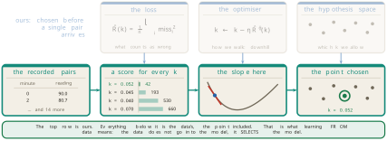
The data does not enter the model. It selects the model, out of a space that was fixed in advance. That sentence is worth more than any other single line in this section, because it is what distinguishes learning from data from the looser thing the phrase suggests.
Three limits follow Equation 1.21, and the third is the serious one.
The first is that downhill from the present position is not the same as lowest anywhere. On the bowl of Figure 1.33 the two coincide, because the bowl has one dip. On most surfaces met later they do not, and a walk settles into whichever local minimum it happens to reach.
The second is that some objectives carry no usable slope. Counting the mistakes a classifier makes gives a number that moves in jumps and is flat between them, so Equation 1.21 has nothing to read. This is why the loss that is optimised and the quantity that is cared about are often not the same object, a distinction that returns whenever a loss is chosen.
The third limit is the one the whole section has been circling. Optimisation returns the best candidate on the recorded pairs, which is what it is for. It promises nothing about pairs that were not recorded. That is the gap of Figure 1.30, and none of the machinery built since has narrowed it by anything at all.
Why learning works, and the three choices
A theorem explains why the gap can ever be crossed, and it is usually quoted as bad news.
Theorem 1.1 (No Free Lunch) Averaged over all problems, every learning algorithm performs exactly as well as every other.
Wolpert proved the learning version in Neural Computation in 1996 (Wolpert 1996), and Wolpert and Macready the optimisation version in the IEEE Transactions on Evolutionary Computation in 1997 (Wolpert and Macready 1997). The premise has to be carried with the statement, because the theorem is empty without it. All problems means every mapping from inputs to outputs, including the vast majority in which what was recorded says nothing whatever about what comes next. That is not the world anyone works in.
Read with its premise attached, Theorem 1.1 says something practical. No method has an advantage in itself. An advantage comes only from the method’s assumptions matching the problem in front of it. Assumptions are therefore not a weakness to be apologised for and minimised. They are the engine, and they are the only reason any of this works. Section 1.1 assumed that the cup loses heat in proportion to the gap between it and the room, and that assumption is exactly what let 16 readings give a curve that holds outside the range measured.
The preference stated at the opening of this section now stops being a matter of taste. A known mechanism is the strongest assumption available. When theory supplies one, using it is what Theorem 1.1 recommends, and that is the reply to the essay of (Sutton 2019): scale wins where the mechanism is unknown, and knowledge wins where it is known.
Everything in this half of the section assembles into one frame, and the frame is the organising object of the rest of the book. Three choices are made before any data is seen. The hypothesis space says which functions are worth considering at all. The loss says how badly one candidate misses the recorded data. The optimiser says how the best candidate is found without trying them all. Underneath sits a question that none of the three answers: will the winner on the recorded data work on data it has never seen?
Definition 1.16 (The supervised learner) A supervised learner is three choices and one question. The choices are a hypothesis space, a loss and an optimiser. The question is whether the candidate that wins on the recorded sample performs on samples never seen.
Definition 1.16 is not a summary of what has been built. It is the frame every later chapter returns to, lighting whichever slot the method of that chapter moves. Its force comes from being tested against methods that look unrelated, and Figure 1.35 places four of them in the frame. A straight line fitted by least squares fills the three slots with every straight line, the squared miss, and a walk downhill. Adding a penalty for a steep line moves one slot only, the loss, and the reason anybody would deliberately make their own score worse is the open question and nothing else. Keeping every recorded example and scoring a new point by its distance to the closest one is the lookup table of Figure 1.30, and it moves two slots: the hypothesis space, and the optimiser, which now searches nothing at fitting time. A tree of yes-and-no questions, scored by how mixed the two sides of each split are and grown one question at a time, looks nothing like a straight line until it is placed in the same three slots.
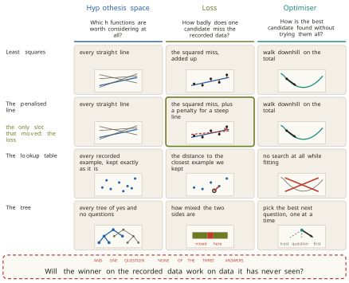
White box, black box, and why those names
The axis of Definition 1.2 has run along the floor of every map in this chapter. Section 1.1 defined its white end carefully, as a model whose mechanism is written down, and gave the black end a single clause. The machinery is now in place to explain that end properly.
Definition 1.17 (Black box) A black box model claims no mechanism at all. Only the mapping from inputs to outputs is fitted, and the model’s form carries no claim about how the system works.
The names are about what can be seen through, and about nothing else. On the left of Figure 1.36 is a model whose mechanism can be read off its equation: in the cooling law, \(k\) is a rate, it has units, and a claim about the world is attached to every symbol. On the right is a block with an arrow going in and an arrow coming out, and a reader can inspect the inputs and the outputs and learn no more. A black-box model can be small and a white-box model can be complicated, so size is not what the names track.
What moves a model along the axis is the proportion of its form that comes from what was already known, against the proportion that comes down to free parameters carrying no claimed meaning. Three anchors fix the scale. The cooling law of Equation 1.2 sits at the white end, since every symbol is a claim. The same law with \(k\) fitted from the log sits one step in, since the form is still the physics and one constant is now measured. A digit classifier sits near the black end, since it claims nothing about the world and supplies only the mapping.
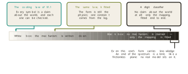
Near the black end, and not on it. The gap in Figure 1.36 is deliberate, because even a digit classifier’s form carries knowledge: the usual image model assumes that nearby pixels matter together, and that assumption came from a person. The ends of this axis are limits in the sense that a frictionless plane is a limit. Nothing occupies them. The useful question is therefore never which box a model is, but which parts of the model came from what was already known. The interior of the axis has a vocabulary of its own, and Section 1.4 supplies it.
A statistician drew the same line from inside statistics. Breiman divided the field in two in Statistical Science in 2001 (Breiman 2001): data modelling assumes the mechanism is known and fits its parameters, and algorithmic modelling treats the mechanism as unknown and lets the algorithm find the mapping. He assumed that the two goals genuinely conflict, and argued that the first culture’s dominance had cost the field. The two cultures are the two ends of Figure 1.36, argued by a working statistician rather than asserted here, which is why the divide is a real feature of how people model and not a convenience of this book.
Everything since Equation 1.18 has assumed that the recorded data carries an answer for each input. Remove that column, and most recorded data looks like what remains, because somebody has to be paid to write an answer column and nobody has to be paid for the rest. Labels are expensive and records are cheap.
Three questions survive the loss of the column, and people pay for all three. What groups are in this data? What else is like this one? Where is this data thick, and where is it thin, which is how a reading that does not belong is found.
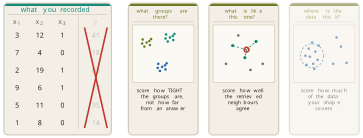
Nothing in Definition 1.16 breaks. The hypothesis space is still a shelf of candidates and the optimiser is still a walk. What changes is the loss: with no answer to agree with, the loss scores the structure instead, measuring how tight the groups are or how well neighbouring points agree. One slot moved, and that is the whole of the difference. This is why learning from data is one subject rather than two, and Section 1.4 draws the branches.
The learning row can now be written into the table of Figure 1.22, which Section 1.2 left in outline. A person writes a hypothesis space and a loss, or else the states, the actions and a reward. Computation does the rest, by an optimiser or by trials. What is learned is the mapping itself, or a value, or a policy. On the axis the row sits towards black.
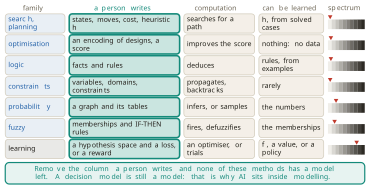
Cover the column headed a person writes in Figure 1.38, and no row retains a method, learning included. That is the argument of Section 1.2 applied to its own final row. Learning is inside modelling for the same reason every other family is: remove what a person wrote, and nothing is left to run. Placed, however, is not the same as justified, and this section closes with what remains unjustified.
Data science, and what it is not
One region of Figure 1.49 has been lit since the first page of this chapter without being explained, and it is the region that cuts across learning from data and pokes out of modelling altogether.
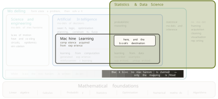
Data science is the end-to-end discipline built around recorded data, and the shape of the work is a pipeline rather than a single act. Tukey argued for the wider discipline in The Future of Data Analysis in 1962 (Tukey 1962), Cleveland proposed the name and the curriculum in the International Statistical Review in 2001 (Cleveland 2001), and Donoho set out the modern account in 2017 (Donoho 2017). Ten stages do the work. A question is framed, which happens before any data exists and decides whether the rest is worth doing. Data is acquired. It is stored and moved at size, which is engineering. It is cleaned, which is most of the job in practice. It is explored, which Tukey named exploratory data analysis in 1977 and argued should precede any assumption about it (Tukey 1977). It is visualised, so that a person can judge it. Inference and causality ask whether one thing caused another or merely preceded it. Then comes modelling and machine learning. Then optimisation and decision, which turns a prediction into an action. Then deployment and governance, which keeps the thing correct after it ships.
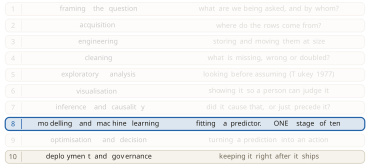
Machine learning is the method of one of those ten stages. It is a common tool at six more, and the first three barely feel it, which is a matter of degree rather than a border. Where it reaches least is the framing of the question, which is the stage that decides whether any of the work is worth doing at all.
The comparison that follows is the one most often made badly. Data science is a pipeline, and machine learning is a family of methods, so the two are not comparable objects and neither contains the other. Statistics sits underneath both as a foundation and remains a discipline in its own right. Figure 1.41 draws the three together with four honest boundaries: mathematics is a foundation rather than a part, distributed systems is plumbing, there is no data science without data, and reporting overlaps but stops at description.
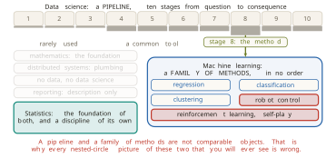
The clearest evidence that the sets do not nest is the material of the first half of this section. Reinforcement learning, self-play and robot control are machine learning and are not data science: no pipeline, no stakeholder, and often no dataset at all. In the other direction, deciding whether a new checkout page caused more purchases is data science that needs no machine learning, and moving ten years of records into one queryable store is data science that needs none either.
The cup of Section 1.1 is small enough to carry all five questions at once, and Figure 1.42 asks them of one object. The physicist asks what mechanism produces this shape. The statistician asks how sure anyone can be that \(k\) is 0.0521. The data scientist asks where the log came from, whether it can be trusted, and who needs the answer. The researcher in artificial intelligence asks what the machine should do about it. And the question of this section asks whether, with no cooling law at all, the curve could be learned from the logs of many cups, and whether what was learned would hold for a cup nobody measured.
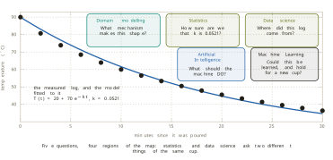
That last question is Theorem 1.1 and Figure 1.30 in the cup’s own terms, and it is the reason this section ends where it does.
What is established, and what is not
Learning is an operation on a formulation, in the sense of Definition 1.11: a slot is left open, and experience fills it, while the states, the actions and the goal or reward stay written by a person. Experience has two sources and no third. It can be generated by the machine’s own action, which costs computation and needs something to act on, and it can be recorded by somebody else, which costs labels and needs nothing to act on. The recorded case can be written down in one line, Equation 1.20, whose objects are a hypothesis space, a loss and an optimiser, and whose answer is found by search rather than by enumeration, because Figure 1.31 closes enumeration off. Gradient descent is the method that search becomes when the space is continuous and the objective has a slope. Theorem 1.1 says that no method is good in itself, and that assumptions are what make any of it work.
What is not established is the thing Equation 1.19 cannot reach. Everything above is a claim about the recorded pairs. Not one line of it says anything about pairs that were never recorded, and the whole construction rests on the gap between the score that can be measured and the score that is wanted being small. That is a debt rather than a deferral, and Chapter 2 is where this book pays it.
One further thing is missing, and it is the subject of Section 1.4. Deciding to learn is not yet a plan. The recorded half divides again on whether the data carries an answer column, and the generated half has methods of its own, and nothing in this section says which kind of learning a given problem needs. The next section draws those branches, and the resulting map organises the rest of the book.
Exercises
Using Definition 1.11 and the four columns of Figure 1.25, classify each of the following by which slots a person wrote and which experience filled: a route planner that ranks roads by the lengths printed on a map; the thermostat of Section 1.2, whose threshold was tuned by hand; and a Go program that learned by playing itself, starting from the rules alone. State for each whether anything is learned at all, and name the rows that are written in all three cases.
A student objects that a model-free method has no model, and therefore falls outside Definition 1.1. Write the objection out in full, then answer it by naming what such a method does model and what it does not. Say which rows of Figure 1.25 decide the answer.
The robot of Figure 1.27 has an estimate on 13 of 36 cells after 10 trials, on 33 after 100, and on all 36 after 1000, and each trial is cut off after 26 moves. Explain why the cells near the shelf settle on their true values before the distant cells do. Then say what would change if the cut-off were raised from 26 moves to 200, and why the three snapshots would then be harder to tell apart.
Using the scores of Figure 1.30, verify by hand that the lookup table must score exactly zero on the recorded pairs, whatever those pairs are, and state the property of the table that forces it. Then construct a set of recorded pairs on which the lookup table also beats the straight line on pairs it has not seen, and say what the construction had to assume about the source of the data.
Take \(J(\theta) = (\theta - 3)^2\) with \(\theta_0 = 0\), as in Equation 1.22 and Equation 1.23, and compute \(\theta_1\) and \(\theta_2\) for \(\eta = 0.6\) and again for \(\eta = 1.1\). Describe in one sentence what the walk does in each case. Then find the value of \(\eta\) at which one step of Equation 1.21 lands exactly as far beyond the minimum as it started before it, and say what the walk does from then on.
For each of the following changes to a learner, name the slot or slots of Definition 1.16 that move, and justify each answer in one sentence: replacing a straight line by a curve; scoring by counting mistakes rather than squaring the miss; keeping every recorded example and doing the work at prediction time. Two of the three move two slots each, and the reasons given in the section are different for the two.
Theorem 1.1 is often quoted as showing that no learner is better than any other. Write the sentence that the theorem actually supports, with its premise attached, and then explain why the quoted version would make the whole of this section pointless. Use the assumption made about the cup in Section 1.1 as the example of an assumption doing work.
Place each of the following on the axis of Figure 1.36, and justify the placement by what the model’s form claims rather than by its size: the SIR epidemic model of Section 1.1; a straight line fitted to the same cooling log; the lookup table of Figure 1.30; and a fuzzy controller whose memberships were written by an engineer and then tuned from recorded data. Then say which of the four moved position because of the tuning, and by how much, measured against the step the cooling law took when \(k\) was fitted from the log.
Five activities are described operationally: deciding whether a new checkout page caused more purchases; training a network to read handwriting; moving ten years of records into one queryable store; teaching a robot arm to grasp by letting it try ten thousand times; and ranking ten million pages by importance with a rule somebody wrote. Place each in Figure 1.41, and use the five placements to show that data science, machine learning and statistics do not nest.
Write the answer-column question of Figure 1.37 as a change to exactly one slot of Definition 1.16, giving a loss that scores structure rather than agreement for the question what groups are in this data. Then explain why the same change cannot be made to the optimiser instead, and keep the answer for comparison after reading Section 1.4.
1.4 The Machine Learning Map
Section 1.3 ended with a decision that is not yet a plan. Learning is an operation on a formulation in the sense of Definition 1.7, experience has two sources and no third, and the recorded case reduces to Equation 1.20. None of that says what to do on a Monday morning with a particular problem and a particular file.
Five ordinary requests make the gap concrete, and they are worth stating together because they look alike and are not. How many units will be sold next month, where ordering too few empties the shelves and ordering too many ties up money in stock nobody wants. Whether a particular card payment is fraud, where a miss costs the money and a false alarm costs the customer. What groups exist among ten thousand customers nobody has ever sorted. Which products are most like the one a shopper is looking at. How a robot arm should place a component on a circuit board, when nobody has ever recorded how it is done.
Each of the five needs a different family of method, with different data, a different notion of being right, and in one case a different kind of experience altogether. Nothing established so far separates them. A person who cannot say which family a request belongs to cannot start, cannot choose between two methods offered, and cannot tell when the method handed to them is the wrong one for the job. This section answers the question with two forks, and the answer turns out to organise the whole of the rest of this book.
A second matter is also still open, and it is older. Figure 1.36 drew the modelling axis with its two ends explained and three anchors placed on it, and Definition 1.17 said what the dark end means. Between the anchors the axis is empty. The second half of this section fills it, because choosing a position on that axis is the decision that the map alone does not make.
The first fork asks where the experience comes from, and the answer was settled in Section 1.3 before the question was asked. Experience is either generated by the machine’s own action or recorded by somebody else. Read as a question about a task rather than about a system, those two sources become the two branches of everything that follows.
Definition 1.18 (Machine learning) Machine learning is learning from experience. Experience that already exists is a dataset, and learning from it is learning from data. Experience created by the learner itself is interaction with an environment, and learning from it is reinforcement learning (RL).
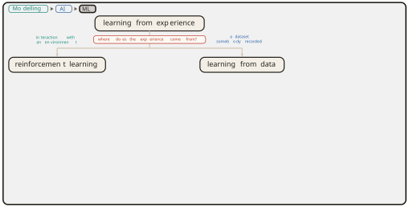
Definition 1.18 is a partition and not a ranking. Neither branch is the harder version of the other, and the reason is that they differ in what is scarce. On the recorded branch the data exists and the question is what can be extracted from it. On the interaction branch there is no data until the learner acts, and its own choices decide what it will ever see.
Most of this book lives on the recorded branch, so it is opened first. A recorded dataset is Equation 1.18, a set of rows, and the second fork asks one question about those rows: does any column of them hold the value to be predicted? That column is what Section 1.3 removed in Figure 1.37, and naming it settles two terms at once.
Definition 1.19 (Supervised learning) Supervised learning is learning from recorded rows in which one column, the answer column, holds for every row the value to be predicted. The answer column is the supervision.
Definition 1.20 (Unsupervised learning) Unsupervised learning is learning from recorded rows that carry no answer column. The hypothesis space and the optimiser of Definition 1.16 are unchanged, and the loss scores the structure of the rows rather than agreement with an answer.
The word supervised repays a moment of attention, because nothing in the procedure watches anything. No person supervises the learner while it runs, and no signal arrives from outside the data. What supervises is a column of known answers, and the word records that fact and nothing else. The terms came out of pattern recognition in the 1960s, and Mitchell fixed them as standard vocabulary in Machine Learning in 1997 (Mitchell 1997), the same book that put the definition of learning on an operational footing in Section 1.3.
The question is about the rows in hand, not about the ambition behind them. A company may want very much to predict fraud, and that want creates no answer column. If nobody marked which past payments were fraudulent, the rows do not carry the answer, and the task is not supervised however it is described in the brief. This point returns in every example below, and it is the single most common error in placing a task on the map.
Four of the five requests can now be sorted. Past sales carry the units sold, so forecasting demand is supervised. Past payments marked fraudulent carry the answer, so fraud detection is supervised. Nobody has written anything on the customer rows or the product rows, so grouping customers and finding similar products are both unsupervised. The robot arm goes nowhere. It has no recorded rows at all, answered or not, and neither branch of the second fork can hold it, which is the first sign that the second fork is not the whole map.
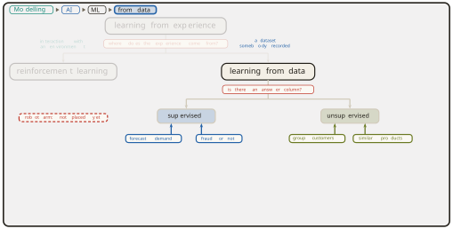
What the answer column contains
Supervised learning divides once more, and the thing that divides it is again a property of the column rather than a property of the ambition. If the answer column holds a number, the task is regression. If it holds a category, the task is classification.
Definition 1.21 (Regression) Regression is supervised learning whose answer column holds a number, so that a prediction can be near or far from the recorded value.
Definition 1.22 (Classification) Classification is supervised learning whose answer column holds a category, so that a prediction is either the recorded value or not.
Regression carries its name by accident, and the accident is worth knowing because the word misleads every reader who meets it for the first time. Galton, working on inheritance in London, published a study of the heights of parents and their children in the Journal of the Anthropological Institute in 1886 (Galton 1886). Very tall parents had children who were tall but less extreme, and very short parents had children who were short but less extreme, and Galton called the effect regression towards mediocrity. He assumed the relationship was linear and the population stable. The statistical machinery he built to measure that one effect turned out to fit any problem of predicting a number, and the name travelled with the machinery. Nothing in Definition 1.21 has anything to do with heights, or with returning towards an average.
Three other names for this same leaf were collected in Figure 1.29: system identification, function approximation, and regression itself. Section 1.3 said that supervised learning is the widest of the four, and Definition 1.19 is where that claim becomes precise. Supervised learning names the whole subtree, and the other three name the regression leaf inside it.
The division matters because two real quantities follow from it. Take a set of flats, each described by its floor area in square metres and its distance to the city centre in kilometres, and write \(a\) and \(d\) for those two inputs. Fourteen flats are recorded, and the model considered is the plane
\[ \hat{y} \;=\; \beta_0 \,+\, \beta_1 a \,+\, \beta_2 d . \tag{1.24}\]
With the monthly rent as the answer column, least squares applied to the fourteen recorded flats, by the procedure Definition 1.4 prescribes, returns
\[ \hat{y} \;=\; 356.95 \,+\, 10.99\,a \,-\, 42.82\,d . \tag{1.25}\]
Every coefficient of Equation 1.25 has a reading. Rent rises by about eleven pounds for each extra square metre and falls by about forty-three pounds for each extra kilometre from the centre. The loss that produced it asks how far the prediction fell from the recorded rent,
\[ L(\hat{y}, y) \;=\; (\hat{y} - y)^2 , \tag{1.26}\]
and Equation 1.26 treats a miss of fifty pounds as better than a miss of five hundred. That is the whole content of the phrase how far off, and it is available only because the column holds a number.
Now change the answer column and change nothing else. Keep the same fourteen flats and the same two input columns, and record instead whether each flat was let within a week. The column now holds yes or no, and the loss that fits it asks a different question,
\[ L(\hat{y}, y) \;=\; \mathbb{1}[\hat{y} \neq y] , \tag{1.27}\]
which charges one unit for a wrong answer and nothing for a right one. Equation 1.27 has no sense of nearly. A prediction that falls just on the wrong side of the division is charged exactly what a prediction that falls far on the wrong side is charged.
The picture follows the loss. For the number, the fitted plane of Equation 1.25 is drawn as its level lines: the sets of flats where the predicted rent is £600, £800 and £1,000. For the category, the model draws one division, and in this example the division that separates the flats let within a week from the rest is the set where the fitted rent equals £1,050,
\[ 356.95 \,+\, 10.99\,a \,-\, 42.82\,d \;=\; 1050 , \tag{1.28}\]
a straight line in the plane of the two inputs. Four of the fourteen flats lie on its high side. Figure 1.45 shows both panels together, with the two answer columns and the two losses drawn above them.
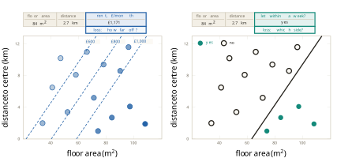
So the loss and the picture are consequences of the column’s type rather than separate facts to be remembered. This is what makes the second division of the second fork worth drawing at all.
The division is also sharper in the definitions than it is in practice, and one case shows where it softens. A rating from one to five stars is ordered, so four is better than three, and the order makes it look like a number. Nothing says the distance from one star to two is the distance from four to five, so the arithmetic that Equation 1.26 performs on it is not obviously meaningful. Treating the rating as a number makes being close count for something. Treating it as five categories makes a near miss cost exactly what a wild miss costs. Both are defensible, the choice is a modelling decision rather than a fact about the data, and the requirement is to be able to say which was chosen and why.
The second fork examined: what survives, and what it assumes
Removing the answer column removes the question that Equation 1.19 was scoring, and Figure 1.37 already showed that three questions survive it. Each of the three now gets its name and its place on the map. What groups are present in these rows is clustering. What else is like this one is retrieval and similarity. Where the rows are dense and where they are sparse is density, which is how a reading that does not belong is found.
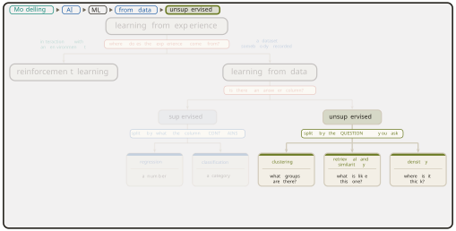
The provenance of the two oldest is unusually tangled. Lloyd wrote the clustering procedure now taught everywhere at Bell Laboratories in 1957, as an internal report on quantising a signal for transmission, and it stayed unpublished until it appeared in the IEEE Transactions on Information Theory in 1982 (Lloyd 1982). MacQueen published the same idea independently in the Proceedings of the Fifth Berkeley Symposium in 1967 (MacQueen 1967), and named it. Both assumed that the number of groups is chosen in advance, which is the assumption the method is still argued about. Cover and Hart analysed the nearest-neighbour rule in the same Transactions in 1967 (Cover and Hart 1967), assuming that the recorded cases and the new case are drawn from the same source. They proved that, as the recorded cases grow without limit, the rule that copies the answer of the nearest recorded case errs at most twice as often as the best rule possible for the problem. That bound made precedent a respectable basis for a decision.
The unsupervised branch is the normal state of recorded data rather than a corner of it. Somebody has to be paid to write an answer column and nobody has to be paid for the rest, so most rows that exist carry no answer. Nothing in Definition 1.16 breaks when the column goes. The hypothesis space is still a set of candidates and the optimiser is still a search. One slot moves, the loss, and that single movement is the whole of the difference between the two halves of the second fork.
The map is now drawn on the recorded side, and the moment to test it is before it is used. The second fork asked whether a column of the table holds the answer. That question has a hidden premise: that the data is a table of rows, and that the rows are independent of each other and interchangeable.
For the fourteen flats the premise holds. Two rows can be exchanged and nothing is lost, because each flat was recorded on its own and the order of recording carries no information. Shuffle the table and it is the same table.
Two shapes of data break the premise, and both are common enough that meeting them on the first day is worth the interruption. The first is a sequence. An electricity load recorded hour by hour, 412 megawatts at nine, 455 at ten, 489 at eleven, 471 at noon and 448 at one, is not a set of five independent readings. Exchanging the ten o’clock row and the noon row produces a different day. The order of the rows is part of the data, and a method that treats the rows as interchangeable discards exactly the structure that made the problem interesting.
The second is a graph. When the data is a set of web pages and the links between them, the relationships are the data and the nodes on their own are almost empty. Flattening a graph into a table of nodes deletes the links, which is to say it deletes the graph. PageRank is the standard illustration, published by Brin and Page in Computer Networks and ISDN Systems in 1998 (Brin and Page 1998) with the technical report following from Stanford in 1999 (Page et al. 1999). A page’s score is defined by the scores of the pages that link to it,
\[ r_i \;=\; \sum_{j \rightarrow i} \frac{r_j}{n_j} , \tag{1.29}\]
where the sum runs over the pages linking to \(i\) and \(n_j\) is the number of links leaving page \(j\). On the web a link runs one way. The small graph of Figure 1.47 draws each link once, without an arrowhead, and it is read as a link in each direction. Equation 1.29 defines \(r\) implicitly, as the value that stops changing when the right-hand side is recomputed from the left. It is a fixed point of the link structure, computed rather than fitted, and no answer column appears anywhere in it. The assumption is that a link is an endorsement, which is what the method loses when the assumption fails.
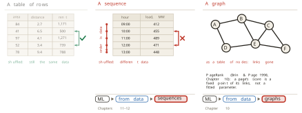
Neither shape leaves the map. Both keep their address under learning from data, and both get their own region of this book, sequences in Chapters 11 and 12 and graphs in Chapter 10. The point of drawing the limit inside the section that draws the map is that a map whose boundary is not marked invites its reader over the edge.
Experience the learner creates
The robot arm has been waiting since Figure 1.44, and the other branch of the first fork is where it belongs. Nothing is recorded, so nothing can be extracted. What exists instead is something that can be acted on and that answers back.
The structure of that branch is a loop with two parties. One of them acts, the other is what it acts on, and the second answers the first. The actor takes an action, and what it acts on returns a new state and a reward. The actor acts again from the new state, and the loop turns. Acting, observing the result, and acting again is the whole of the arrangement, and its formal name records one assumption about it.
Definition 1.23 (Markov decision process) A Markov decision process (MDP) is the formal model of the interaction loop. The agent is the party that acts, the environment is what it acts on, and the process is given by the states, the actions available in each, a rule giving the next state from the current state and action, and a reward. It assumes that the present state is enough to decide what to do next, so that the history before it carries no further information.
Bellman gave the loop its formal treatment in Dynamic Programming, published by Princeton in 1957 (Bellman 1957), assuming exactly the condition named in Definition 1.23. The idea is older than the mathematics. Thorndike, working on animal behaviour, stated the law of effect in Animal Intelligence in 1911 (Thorndike 1911): an action followed by a satisfying result becomes more likely to be repeated in the same situation. He assumed that the strengthening is automatic and requires no reasoning about why the result was good, and that assumption is what makes the principle mechanisable at all.
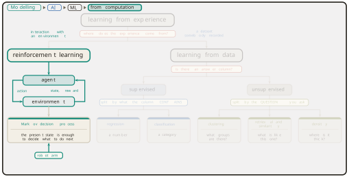
This branch is genuinely a different kind of problem and not a harder instance of the recorded one, and the reason is in the data. In supervised learning the rows exist before the learner does, and nothing the learner decides changes them. In the interaction loop the rows do not exist until the learner acts, and its own choices decide which ones it will ever see. A learner that never tries a particular action never finds out what that action would have returned. The assumption of Definition 1.14, that the recorded sample and the future cases come from the same source, is not merely unproven here. It is false by construction, because the learner’s own improvement changes the source.
The map, and what fills its nodes
Both halves of the first fork are now drawn, and the whole thing is one tree rooted at learning from experience. Figure 1.49 carries it, with each leaf tagged by where this book treats it.
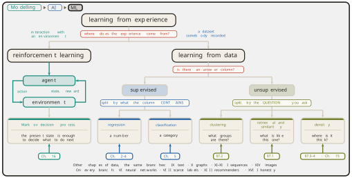
The tree is a map of one subject and not a catalogue of separate techniques, and Definition 1.16 is why. Every node on Figure 1.49 is a hypothesis space, a loss and an optimiser, filled differently. The regression leaf and the classification leaf differ in the loss, by Equation 1.26 and Equation 1.27. The unsupervised leaves differ from the supervised ones in the loss again, which now scores structure. The interaction branch differs in what the recorded data is and where it comes from, while the three slots remain the three slots. A reader who holds Definition 1.16 in mind while reading Figure 1.49 is reading one object lit in six ways.
One term that many readers arrive with is deliberately absent from the tree, and its absence is a claim rather than an oversight. Deep learning is a particular family of functions that can be chosen as the hypothesis space. It fills the first of the three slots, which places it on every branch of Figure 1.49 rather than beside them. A deep model can do regression, classification, clustering and reinforcement learning, and calling it a fifth branch would put a choice of hypothesis space in the same tree as a fact about the data. Chapter 6 of this book builds it.
The interior of the modelling axis
The map says which family a task belongs to. It says nothing about how much of the model should be written down in advance, and that is the second matter left open at the start of this section. Figure 1.36 placed three anchors on the axis, the cooling law with every symbol a claim, the same law with one constant fitted, and a digit classifier near the dark end. Between the anchors the axis was empty, and it is not.
The interior contains at least five positions that are genuinely different, and each is named by what is known and what is fitted rather than by a shade. The first is to fit the constants of a known equation, which is the cooling constant of Section 1.1, and it buys parameters that mean something. The second is to keep the mechanism and fit a separate account of how it is wrong. Kennedy and O’Hagan set this out in the Journal of the Royal Statistical Society B in 2001 (Kennedy and O’Hagan 2001), assuming that the discrepancy between a computer model and reality is itself structured enough to be modelled. That assumption turns the residual of Section 1.1 into an object of its own, and it buys honesty about the misfit. The third is to write down most of the equations and learn the single term that nobody can write, which keeps the structure exactly where the structure is known. The fourth is to keep the governing equations as a penalty rather than as a constraint, fitting a flexible model and charging it whenever it violates them. Raissi, Perdikaris and Karniadakis published that construction in the Journal of Computational Physics in 2019 (Raissi et al. 2019), assuming the governing equations are known and can be differentiated through. It buys the ability to learn from very little data. The fifth asserts only that the state changes smoothly in time and learns the rule for how. That is the neural ordinary differential equation of Chen, Rubanova, Bettencourt and Duvenaud, published at NeurIPS in 2018 (Chen et al. 2018), and it buys continuous time when the measurements arrive at irregular intervals.
None of the five is called a grey box here, and the omission is deliberate, because the phrase has a narrower technical meaning than its casual use suggests.
Definition 1.24 (Grey box) In system identification, a grey-box model is one whose structure is known and whose parameters are unknown. Ljung fixed this usage in System Identification: Theory for the User in 1987 (Ljung 1987).
Definition 1.24 describes the first of the five positions exactly and none of the other four. Using it for the whole interior loses the distinction between fitting a constant inside a known equation and penalising a flexible model for breaking one, which is the distinction the interior exists to make.
Choosing among the five is a decision with four inputs, and Section 1.3 supplied the principle behind them. The white end was not abandoned because it was worse. It was abandoned for problems that closed it. So the question is always how far a particular problem has closed it, and four answers settle the matter. How much theory is available. How much data is available. How much of the reasoning must be shown to somebody. How far beyond the recorded conditions the model must go.
Two quantities move in opposite directions along the axis, and both are shapes rather than measured curves. The more structure a model assumes, the less data is needed to pin down what remains: a few readings fix one constant, and a mapping fitted end to end needs a great deal. The more structure is written in, the further the model can be trusted beyond the data it saw, because only written structure extends to conditions never recorded. Figure 1.50 draws both.
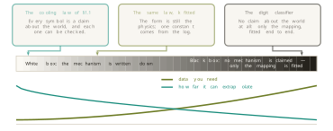
There are no numbers on either shape, and there is no dataset behind them. They record a direction and nothing more. Stating that plainly closes the argument Breiman made in Statistical Science in 2001 (Breiman 2001) and Section 1.3 reported. A model can explain a mechanism well and predict a behaviour badly. Which of the two is wanted has to be settled before a method is chosen rather than after.
A worked case shows the four questions doing their work. A chemical reactor is to be modelled. The chemistry is known, so theory is good. Four hundred runs have been logged, which is not many. A regulator will read the model and must be shown the reasoning. The plant will run at conditions outside the logged range. Each of the four answers pushes towards the white end. Good theory means there is structure to write down. Few runs means structure has to compensate for the data that is missing. A regulator can read written structure and cannot read a fitted mapping. Extrapolation is where nothing but written structure survives. The position that follows is near the white end, fitting the constants of the known chemistry, possibly with a learned discrepancy beside it.
Then change one answer and watch the position move. If nobody outside reads the model, the third question no longer pushes, and the position moves one notch towards the dark end, buying flexibility that the reading requirement had been paying for. Figure 1.51 shows the move. The four questions are a dial and not a lookup table, and a reader who can state which answer would move their own position has understood the axis in a way that naming a box cannot deliver.
The third question hides a difficulty that the word explain conceals. Three words are used interchangeably for it and mean three different things.
Definition 1.25 (Transparency, interpretability, explainability) A model is transparent when the model itself can be read. It is interpretable when the path from one input to one output can be followed. An explanation is a separate account of one output, built beside the model after the fact, and it is not the model.
The distinction is easiest to see on the rent model, because Equation 1.25 is all three at once and the three still come apart. It is transparent: the equation is on the page, and each term carries a rate per square metre or a cost per kilometre. It is interpretable: for a flat of 62 square metres at 4 kilometres from the centre, the prediction is 356.95 plus 681.38 minus 171.28, which is £867.05, and the reader has watched the arithmetic happen.
Now suppose the model is a black box in the sense of Definition 1.17, and it returns £867 with nothing readable inside. An explanation can still be built, and the standard form of it measures every contribution from a reference point. The average of the fourteen recorded flats is 71.14 square metres at 6.12 kilometres, and the model’s prediction there is £876.7. Subtracting that prediction from the prediction for the flat in question gives, for a model of the form Equation 1.24,
\[ \hat{y}(a, d) \,-\, \hat{y}(\bar{a}, \bar{d}) \;=\; \beta_1 (a - \bar{a}) \,+\, \beta_2 (d - \bar{d}) , \tag{1.30}\]
and the two terms of Equation 1.30 are the account. The flat is 9.14 square metres smaller than average, which is worth \(10.99 \times (-9.14)\), so floor area pulls the prediction down by £100.5. It is 2.12 kilometres closer in than average, which is worth \(-42.82 \times (-2.12)\), so distance pushes it up by £90.8. Starting from £876.7 and applying both gives £867.0, and the account balances.
Two things about that account matter more than the arithmetic. The numbers are not the model’s own terms. They are differences from an average flat, and changing the reference changes every one of them, which is why an explanation without its reference point stated cannot be checked at all. And the account was built beside the model rather than read out of it, so a second method could produce a different account of the same output without either being wrong.
Tools for building such accounts are widely used. Ribeiro, Singh and Guestrin published the local surrogate method known as LIME at KDD in 2016 (Ribeiro et al. 2016), assuming that a complicated model is close to a simple one in the neighbourhood of a single case. Lundberg and Lee unified several attribution methods at NIPS in 2017 (Lundberg and Lee 2017) by deriving them from the Shapley value of cooperative game theory, and Equation 1.30 is what that construction reduces to for an additive model. Wachter, Mittelstadt and Russell proposed counterfactual explanations in the Harvard Journal of Law and Technology in 2017 (Wachter et al. 2017), answering what would have had to differ for the decision to change. Against all of them, Rudin argued in Nature Machine Intelligence in 2019 (Rudin 2019) that for high-stakes decisions the right response is to build a model that can be read rather than to explain one that cannot. Her ground is that an account which only approximates the model can be faithful to it and still mislead about it. That is a live argument in the field and not a settled result, and this book presents it as one.
The requirement is no longer only an engineering preference. Article 22 of the General Data Protection Regulation restricts decisions taken solely by automated processing and attaches safeguards to them (European Parliament and Council 2016), and the European Union’s Artificial Intelligence Act of 2024 imposes transparency obligations on systems classed as high risk (European Parliament and Council 2024). The obligation arrives from outside modelling altogether, which is the point worth carrying forward: the third of the four questions can be answered by a regulator rather than by the modeller.
What is established, and what is not
Two questions place any learning task. Where does the experience come from, which divides interaction from recorded data by Definition 1.18. Does a column of the recorded rows hold the answer, which divides supervised from unsupervised by Definition 1.19 and Definition 1.20. Supervised divides again by what the column contains, into Definition 1.21 and Definition 1.22, and the loss and the picture follow from the column’s type rather than standing beside it. Unsupervised divides by the question asked, into groups, similarity and density. Both forks are facts about the data in hand and not about the ambition in the brief, which is why Figure 1.49 can be used before anything is known about method.
The map has a stated boundary. The second fork assumes rows that are independent and interchangeable, and Figure 1.47 shows two shapes of data that are not. The interior of the modelling axis has a vocabulary now, five positions named by what is known and what is fitted, and a way of choosing among them from four questions rather than from a preference. The word explain has been separated into three, and one of the three is an account built after the fact from a reference point that has to be stated.
What is not established is anything at all about how to solve a task once it is placed. Not one line of this chapter has fitted a model to data, and Figure 1.49 names families rather than methods. The whole of the chapter has been about which recipe a problem needs. Chapter 2 is where a recipe is first assembled, on the simplest node of Figure 1.49 that is still a complete learner: two columns of numbers, no formula available, and a prediction required.
The mathematics that the assembly needs is not a syllabus set for the reader’s convenience. Every piece of it has already been needed. Linear algebra was needed the moment a model took several inputs at once, as Equation 1.24 does. Calculus was needed for Equation 1.21, where the slope is what made the search possible once Figure 1.31 closed enumeration off. Probability was needed because the same input does not always return the same output. Statistics was needed because Equation 1.19 is computed on a finite sample and Equation 1.20 is wanted for the world. Optimisation is Equation 1.20 itself, in every chapter of this book without exception. Numerical methods were needed when the cooling constant of Section 1.1 came off a grid of 7,001 candidate values rather than out of a formula. Algorithms were needed to explain why a space of \(10^{100}\) candidates is impossible rather than merely large. Domain knowledge belongs beside all seven, because Theorem 1.1 says that a method wins only where its assumptions match the world, and knowing which assumptions match is knowing the problem.
Exercises
State, for each of the five requests opened at the start of this section, which leaf of Figure 1.49 it belongs to and which single fact about the data decides it. One of the five cannot be placed by the second fork at all. Name it, and say what would have to exist for the second fork to place it.
Five answer columns are proposed: the number of units sold; whether a payment is fraud; which of twelve depots served an order; the temperature in six hours; and a rating from one to five stars. Place each by Definition 1.21 and Definition 1.22, and give the loss that follows from Equation 1.26 or Equation 1.27. Exactly one of the five has no forced answer. Give both readings of it, and state what each one costs.
A brief asks for ten thousand customers to be sorted into the five segments that the marketing department has already defined. Explain why the brief alone does not place the task on Figure 1.49, and name the one property of the recorded rows that decides between classification and clustering. Then say which of the two is more likely in practice, and why.
Verify from Equation 1.25 that the flat of 62 square metres at 4 kilometres has a predicted rent of £867, and then find the distance at which a flat of 62 square metres would fall exactly on the boundary of Equation 1.28, and say what that value means. Using the same coefficients, state how much extra floor area compensates for one further kilometre from the centre, and say what would have to be true of the city for that trade-off to be stable across it.
The electricity load of Figure 1.47 is recorded hourly. Write down the question the second fork would ask of it, answer that question, and then explain why the answer is not enough to place the task. Construct one prediction problem about the same data for which the row independence premise is harmless, and one for which it destroys the problem.
Equation 1.29 defines each score in terms of the others. Take the six-node graph of Figure 1.47, with each link running both ways, set every score to \(1/6\), and compute one round of the right-hand side by hand for nodes A and E. State which slot of Definition 1.16 PageRank occupies, if any, and use the answer to explain why the method sits on Figure 1.49’s boundary rather than on one of its leaves.
A hospital wants to predict which patients will be readmitted within thirty days. It has five years of records with readmissions marked, good clinical theory for two of the six factors involved, and a regulator who must be shown the reasoning for every individual decision. Place the task on Figure 1.49, then choose a position on the axis of Figure 1.50 using the four questions, naming which of the five interior positions it is. Then state the single change to the situation that would move the position furthest, and in which direction.
Using Definition 1.25 and Equation 1.30, explain why an explanation of the hospital model that reports a contribution of minus four days for a patient’s age is not by itself something a regulator can check. Name the quantity that must accompany it, and say what would change about every reported contribution if that quantity were computed over last year’s patients rather than over the full five years.